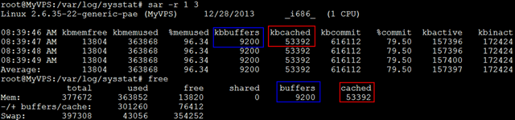

Linux工具快速教程¶
前言¶
Linux下有很多命令行工具供我们使用，每个工具总是提供了大量参数供我们选择； 实际工作中，我们用到的工具，最常用的总是那么几个参数组合； 为此，我写了这本书相对实用的书；
这本书专注于Linux工具的最常用用法，以便读者能以最快时间掌握，并在工作中应用；
说明¶
全书分为三个部分：
- 第一部分为基础篇，介绍我们工作中常用的工具的高频用法；
- 第二部分为进阶篇，介绍的工具更多的适合程序员使用，分为程序构建、程序调试及程序优化；
- 第三部分是工具参考篇，主要介绍实用工具的用法和实例；相比第一二部分，这里针对每个工具的介绍更全面；
同时，这个教程也可当作Linux命令手册使用，使用左边栏的目录和搜索栏可以很方便的查阅；
建议¶
- 最好安装一个Linux系统（对于新手Ubuntu容易入门），将教程中的命令敲到bash中看看效果
- 如果有兴趣，可以在了解之后立即查看相关更完备的内容 (比如查阅官方文档)
写作工具¶
本书使用的reStructuredText标记语言，相对Markdown来说，在写书方面更有优势:
- 使用sphnix能够自动生成目录和索引文件，方便查询和检索；
- 有大量漂亮的HTML书籍主题模版，可为书籍轻松换肤（类似Wordpress的网站模版）；
- 对于参考手册类书籍的编写在语法上更为便利（python官方帮助文档的使用者）；
版权声明¶
注解
本书为开源图书，版权归作者所有；欢迎下载及编辑(个人用途)，但未经作者同意必须保留此段声明，且不可用于商业用途，否则保留追究法律责任的权利。
- 作者：大CC
- 博客：http://blog.me115.com
- Github地址：https://github.com/me115/linuxtools_rst
目录¶
Linux基础¶
这一部分主要介绍Linux常用命令工具，比如文件管理、文本处理；为了让读者用最少的时间掌握到常用的知识，对于每个工具的举例，尽量做到小而精;
注解
本书并非一本讲解Linux各种命令的完整用法的书，并且假设读者已经熟悉Linux命令行下的基本操作。如果读者对Linux操作系统尚不了解，可以参考 《鸟哥的私房菜 基础学习篇》[1]一书。
学会使用命令帮助¶
概述¶
在linux终端，面对命令不知道怎么用，或不记得命令的拼写及参数时，我们需要求助于系统的帮助文档； linux系统内置的帮助文档很详细，通常能解决我们的问题，我们需要掌握如何正确的去使用它们；
- 在只记得部分命令关键字的场合，我们可通过man -k来搜索；
- 需要知道某个命令的简要说明，可以使用whatis；而更详细的介绍，则可用info命令；
- 查看命令在哪个位置，我们需要使用which；
- 而对于命令的具体参数及使用方法，我们需要用到强大的man；
下面介绍这些命令；
命令使用¶
查看命令的简要说明¶
简要说明命令的作用（显示命令所处的man分类页面）:
$whatis command
正则匹配:
$whatis -w "loca*"
更加详细的说明文档:
$info command
使用man¶
查询命令command的说明文档:
$man command
eg：man date
使用page up和page down来上下翻页
在man的帮助手册中，将帮助文档分为了9个类别，对于有的关键字可能存在多个类别中， 我们就需要指定特定的类别来查看；（一般我们查询bash命令，归类在1类中）；
man页面所属的分类标识(常用的是分类1和分类3)
(1)、用户可以操作的命令或者是可执行文件
(2)、系统核心可调用的函数与工具等
(3)、一些常用的函数与数据库
(4)、设备文件的说明
(5)、设置文件或者某些文件的格式
(6)、游戏
(7)、惯例与协议等。例如Linux标准文件系统、网络协议、ASCⅡ，码等说明内容
(8)、系统管理员可用的管理条令
(9)、与内核有关的文件
前面说到使用whatis会显示命令所在的具体的文档类别，我们学习如何使用它
eg:
$whatis printf
printf (1) - format and print data
printf (1p) - write formatted output
printf (3) - formatted output conversion
printf (3p) - print formatted output
printf [builtins] (1) - bash built-in commands, see bash(1)
我们看到printf在分类1和分类3中都有；分类1中的页面是命令操作及可执行文件的帮助；而3是常用函数库说明；如果我们想看的是C语言中printf的用法，可以指定查看分类3的帮助：
$man 3 printf
$man -k keyword
查询关键字 根据命令中部分关键字来查询命令，适用于只记住部分命令的场合；
eg：查找GNOME的config配置工具命令:
$man -k GNOME config| grep 1
对于某个单词搜索，可直接使用/word来使用: /-a; 多关注下SEE ALSO 可看到更多精彩内容
查看路径¶
查看程序的binary文件所在路径:
$which command
eg:查找make程序安装路径:
$which make
/opt/app/openav/soft/bin/make install
查看程序的搜索路径:
$whereis command
当系统中安装了同一软件的多个版本时，不确定使用的是哪个版本时，这个命令就能派上用场；
总结¶
whatis info man which whereis
文件及目录管理¶
目录
文件管理不外乎文件或目录的创建、删除、查询、移动，有mkdir/rm/mv
文件查询是重点，用find来进行查询；find的参数丰富，也非常强大；
查看文件内容是个大的话题，文本的处理有太多的工具供我们使用，在本章中只是点到即止，后面会有专门的一章来介绍文本的处理工具；
有时候，需要给文件创建一个别名，我们需要用到ln，使用这个别名和使用原文件是相同的效果；
创建和删除¶
- 创建：mkdir
- 删除：rm
- 删除非空目录：rm -rf file目录
- 删除日志 rm *log (等价: $find ./ -name “*log” -exec rm {} ;)
- 移动：mv
- 复制：cp (复制目录：cp -r )
查看当前目录下文件个数:
$find ./ | wc -l
复制目录:
$cp -r source_dir dest_dir
列出目录项¶
- 显示当前目录下的文件 ls
- 按时间排序，以列表的方式显示目录项 ls -lrt
以上这个命令用到的频率如此之高，以至于我们需要为它建立一个快捷命令方式:
在.bashrc 中设置命令别名:
alias lsl='ls -lrt'
alias lm='ls -al|more'
这样，使用lsl，就可以显示目录中的文件按照修改时间排序；以列表方式显示；
给每项文件前面增加一个id编号(看上去更加整洁):
>ls | cat -n
1 a 2 a.out 3 app 4 b 5 bin 6 config
注：.bashrc 在/home/你的用户名/ 文件夹下，以隐藏文件的方式存储；可使用 ls -a 查看；
查找目录及文件 find/locate¶
搜寻文件或目录:
$find ./ -name "core*" | xargs file
查找目标文件夹中是否有obj文件:
$find ./ -name '*.o'
递归当前目录及子目录删除所有.o文件:
$find ./ -name "*.o" -exec rm {} \;
find是实时查找，如果需要更快的查询，可试试locate；locate会为文件系统建立索引数据库，如果有文件更新，需要定期执行更新命令来更新索引库:
$locate string
寻找包含有string的路径:
$updatedb
与find不同，locate并不是实时查找。你需要更新数据库，以获得最新的文件索引信息。
查看文件内容¶
查看文件：cat vi head tail more
显示时同时显示行号:
$cat -n
按页显示列表内容:
$ls -al | more
只看前10行:
$head - 10 **
显示文件第一行:
$head -1 filename
显示文件倒数第五行:
$tail -5 filename
查看两个文件间的差别:
$diff file1 file2
动态显示文本最新信息:
$tail -f crawler.log
查找文件内容¶
使用egrep查询文件内容:
egrep '03.1\/CO\/AE' TSF_STAT_111130.log.012
egrep 'A_LMCA777:C' TSF_STAT_111130.log.035 > co.out2
文件与目录权限修改¶
- 改变文件的拥有者 chown
- 改变文件读、写、执行等属性 chmod
- 递归子目录修改： chown -R tuxapp source/
- 增加脚本可执行权限： chmod a+x myscript
给文件增加别名¶
创建符号链接/硬链接:
ln cc ccAgain :硬连接；删除一个，将仍能找到；
ln -s cc ccTo :符号链接(软链接)；删除源，另一个无法使用；（后面一个ccTo 为新建的文件）
管道和重定向¶
- 批处理命令连接执行，使用 |
- 串联: 使用分号 ;
- 前面成功，则执行后面一条，否则，不执行:&&
- 前面失败，则后一条执行: ||
ls /proc && echo suss! || echo failed.
能够提示命名是否执行成功or失败；
与上述相同效果的是:
if ls /proc; then echo suss; else echo fail; fi
重定向:
ls proc/*.c > list 2> &l 将标准输出和标准错误重定向到同一文件；
等价的是:
ls proc/*.c &> list
清空文件:
:> a.txt
重定向:
echo aa >> a.txt
设置环境变量¶
启动帐号后自动执行的是 文件为 .profile，然后通过这个文件可设置自己的环境变量；
安装的软件路径一般需要加入到path中:
PATH=$APPDIR:/opt/app/soft/bin:$PATH:/usr/local/bin:$TUXDIR/bin:$ORACLE_HOME/bin;export PATH
Bash快捷输入或删除¶
快捷键:
Ctl-U 删除光标到行首的所有字符,在某些设置下,删除全行
Ctl-W 删除当前光标到前边的最近一个空格之间的字符
Ctl-H backspace,删除光标前边的字符
Ctl-R 匹配最相近的一个文件，然后输出
文本处理¶
目录
本节将介绍Linux下使用Shell处理文本时最常用的工具： find、grep、xargs、sort、uniq、tr、cut、paste、wc、sed、awk； 提供的例子和参数都是常用的； 我对shell脚本使用的原则是命令单行书写，尽量不要超过2行； 如果有更为复杂的任务需求，还是考虑python吧；
find 文件查找¶
查找txt和pdf文件:
find . \( -name "*.txt" -o -name "*.pdf" \) -print
正则方式查找.txt和pdf:
find . -regex ".*\(\.txt|\.pdf\)$"
-iregex： 忽略大小写的正则
否定参数 ,查找所有非txt文本:
find . ! -name "*.txt" -print
指定搜索深度,打印出当前目录的文件（深度为1）:
find . -maxdepth 1 -type f
定制搜索¶
- 按类型搜索
find . -type d -print //只列出所有目录
-type f 文件 / l 符号链接 / d 目录
find支持的文件检索类型可以区分普通文件和符号链接、目录等，但是二进制文件和文本文件无法直接通过find的类型区分出来；
file命令可以检查文件具体类型（二进制或文本）:
$file redis-cli # 二进制文件
redis-cli: ELF 64-bit LSB executable, x86-64, version 1 (SYSV), dynamically linked (uses shared libs), for GNU/Linux 2.6.9, not stripped
$file redis.pid # 文本文件
redis.pid: ASCII text
所以,可以用以下命令组合来实现查找本地目录下的所有二进制文件:
ls -lrt | awk '{print $9}'|xargs file|grep ELF| awk '{print $1}'|tr -d ':'
- 按时间搜索
- -atime 访问时间 (单位是天，分钟单位则是-amin，以下类似）
- -mtime 修改时间 （内容被修改）
- -ctime 变化时间 （元数据或权限变化）
最近第7天被访问过的所有文件:
find . -atime 7 -type f -print
最近7天内被访问过的所有文件:
find . -atime -7 -type f -print
查询7天前被访问过的所有文件:
find . -atime +7 type f -print
- 按大小搜索：
w字 k M G 寻找大于2k的文件:
find . -type f -size +2k
按权限查找:
find . -type f -perm 644 -print //找具有可执行权限的所有文件
按用户查找:
find . -type f -user weber -print// 找用户weber所拥有的文件
找到后的后续动作¶
- 删除
删除当前目录下所有的swp文件:
find . -type f -name "*.swp" -delete
另一种语法:
find . type f -name "*.swp" | xargs rm
- 执行动作（强大的exec）
将当前目录下的所有权变更为weber:
find . -type f -user root -exec chown weber {} \;
注：{}是一个特殊的字符串，对于每一个匹配的文件，{}会被替换成相应的文件名；
将找到的文件全都copy到另一个目录:
find . -type f -mtime +10 -name "*.txt" -exec cp {} OLD \;
- 结合多个命令
如果需要后续执行多个命令，可以将多个命令写成一个脚本。然后 -exec 调用时执行脚本即可:
-exec ./commands.sh {} \;
grep 文本搜索¶
grep match_patten file // 默认访问匹配行
常用参数
- -o 只输出匹配的文本行 VS -v 只输出没有匹配的文本行
- -c 统计文件中包含文本的次数
- grep -c “text” filename
- -n 打印匹配的行号
- -i 搜索时忽略大小写
- -l 只打印文件名
在多级目录中对文本递归搜索(程序员搜代码的最爱）:
grep "class" . -R -n
匹配多个模式:
grep -e "class" -e "vitural" file
grep输出以0作为结尾符的文件名（-z）:
grep "test" file* -lZ| xargs -0 rm
综合应用：将日志中的所有带where条件的sql查找查找出来:
cat LOG.* | tr a-z A-Z | grep "FROM " | grep "WHERE" > b
查找中文示例：工程目录中utf-8格式和gb2312格式两种文件，要查找字的是中文；
查找到它的utf-8编码和gb2312编码分别是E4B8ADE69687和D6D0CEC4
查询:
grep：grep -rnP "\xE4\xB8\xAD\xE6\x96\x87|\xD6\xD0\xCE\xC4" *即可
汉字编码查询：http://bm.kdd.cc/
xargs 命令行参数转换¶
xargs 能够将输入数据转化为特定命令的命令行参数；这样，可以配合很多命令来组合使用。比如grep，比如find； - 将多行输出转化为单行输出
cat file.txt| xargs
n 是多行文本间的定界符
- 将单行转化为多行输出
cat single.txt | xargs -n 3
-n：指定每行显示的字段数
xargs参数说明
- -d 定义定界符 （默认为空格 多行的定界符为 n）
- -n 指定输出为多行
- -I {} 指定替换字符串，这个字符串在xargs扩展时会被替换掉,用于待执行的命令需要多个参数时
- -0：指定0为输入定界符
示例:
cat file.txt | xargs -I {} ./command.sh -p {} -1
#统计程序行数
find source_dir/ -type f -name "*.cpp" -print0 |xargs -0 wc -l
#redis通过string存储数据，通过set存储索引，需要通过索引来查询出所有的值：
./redis-cli smembers $1 | awk '{print $1}'|xargs -I {} ./redis-cli get {}
sort 排序¶
字段说明
- -n 按数字进行排序 VS -d 按字典序进行排序
- -r 逆序排序
- -k N 指定按第N列排序
示例:
sort -nrk 1 data.txt
sort -bd data // 忽略像空格之类的前导空白字符
uniq 消除重复行¶
- 消除重复行
sort unsort.txt | uniq
- 统计各行在文件中出现的次数
sort unsort.txt | uniq -c
- 找出重复行
sort unsort.txt | uniq -d
可指定每行中需要比较的重复内容：-s 开始位置 -w 比较字符数
用tr进行转换¶
- 通用用法
echo 12345 | tr '0-9' '9876543210' //加解密转换，替换对应字符
cat text| tr '\t' ' ' //制表符转空格
- tr删除字符
cat file | tr -d '0-9' // 删除所有数字
-c 求补集
cat file | tr -c '0-9' //获取文件中所有数字
cat file | tr -d -c '0-9 \n' //删除非数字数据
- tr压缩字符
tr -s 压缩文本中出现的重复字符；最常用于压缩多余的空格:
cat file | tr -s ' '
- 字符类
- tr中可用各种字符类：
- alnum：字母和数字
- alpha：字母
- digit：数字
- space：空白字符
- lower：小写
- upper：大写
- cntrl：控制（非可打印）字符
- print：可打印字符
使用方法：tr [:class:] [:class:]
tr '[:lower:]' '[:upper:]'
cut 按列切分文本¶
- 截取文件的第2列和第4列
cut -f2,4 filename
- 去文件除第3列的所有列
cut -f3 --complement filename
- -d 指定定界符
cat -f2 -d";" filename
- cut 取的范围
- N- 第N个字段到结尾
- -M 第1个字段为M
- N-M N到M个字段
- cut 取的单位
- -b 以字节为单位
- -c 以字符为单位
- -f 以字段为单位（使用定界符）
示例:
cut -c1-5 file //打印第一到5个字符
cut -c-2 file //打印前2个字符
截取文本的第5到第7列
$echo string | cut -c5-7
paste 按列拼接文本¶
将两个文本按列拼接到一起;
cat file1
1
2
cat file2
colin
book
paste file1 file2
1 colin
2 book
默认的定界符是制表符，可以用-d指明定界符:
paste file1 file2 -d ","
1,colin
2,book
wc 统计行和字符的工具¶
$wc -l file // 统计行数
$wc -w file // 统计单词数
$wc -c file // 统计字符数
sed 文本替换利器¶
- 首处替换
sed 's/text/replace_text/' file //替换每一行的第一处匹配的text
- 全局替换
sed 's/text/replace_text/g' file
默认替换后，输出替换后的内容，如果需要直接替换原文件,使用-i:
sed -i 's/text/repalce_text/g' file
- 移除空白行
sed '/^$/d' file
- 变量转换
已匹配的字符串通过标记&来引用.
echo this is en example | sed 's/\w+/[&]/g'
$>[this] [is] [en] [example]
- 子串匹配标记
第一个匹配的括号内容使用标记 1 来引用
sed 's/hello\([0-9]\)/\1/'
- 双引号求值
sed通常用单引号来引用；也可使用双引号，使用双引号后，双引号会对表达式求值:
sed 's/$var/HLLOE/'
当使用双引号时，我们可以在sed样式和替换字符串中指定变量；
eg:
p=patten
r=replaced
echo "line con a patten" | sed "s/$p/$r/g"
$>line con a replaced
- 其它示例
字符串插入字符：将文本中每行内容（ABCDEF） 转换为 ABC/DEF:
sed 's/^.\{3\}/&\//g' file
awk 数据流处理工具¶
- awk脚本结构
awk ' BEGIN{ statements } statements2 END{ statements } '
- 工作方式
1.执行begin中语句块；
2.从文件或stdin中读入一行，然后执行statements2，重复这个过程，直到文件全部被读取完毕；
3.执行end语句块；
print 打印当前行¶
- 使用不带参数的print时，会打印当前行
echo -e "line1\nline2" | awk 'BEGIN{print "start"} {print } END{ print "End" }'
- print 以逗号分割时，参数以空格定界;
echo | awk ' {var1 = "v1" ; var2 = "V2"; var3="v3"; \
print var1, var2 , var3; }'
$>v1 V2 v3
- 使用-拼接符的方式（”“作为拼接符）;
echo | awk ' {var1 = "v1" ; var2 = "V2"; var3="v3"; \
print var1"-"var2"-"var3; }'
$>v1-V2-v3
特殊变量： NR NF $0 $1 $2¶
NR:表示记录数量，在执行过程中对应当前行号；
NF:表示字段数量，在执行过程总对应当前行的字段数；
$0:这个变量包含执行过程中当前行的文本内容；
$1:第一个字段的文本内容；
$2:第二个字段的文本内容；
echo -e "line1 f2 f3\n line2 \n line 3" | awk '{print NR":"$0"-"$1"-"$2}'
- 打印每一行的第二和第三个字段
awk '{print $2, $3}' file
- 统计文件的行数
awk ' END {print NR}' file
- 累加每一行的第一个字段
echo -e "1\n 2\n 3\n 4\n" | awk 'BEGIN{num = 0 ;
print "begin";} {sum += $1;} END {print "=="; print sum }'
传递外部变量¶
var=1000
echo | awk '{print vara}' vara=$var # 输入来自stdin
awk '{print vara}' vara=$var file # 输入来自文件
用样式对awk处理的行进行过滤¶
awk 'NR < 5' #行号小于5
awk 'NR==1,NR==4 {print}' file #行号等于1和4的打印出来
awk '/linux/' #包含linux文本的行（可以用正则表达式来指定，超级强大）
awk '!/linux/' #不包含linux文本的行
读取命令输出¶
使用getline，将外部shell命令的输出读入到变量cmdout中:
echo | awk '{"grep root /etc/passwd" | getline cmdout; print cmdout }'
在awk中使用循环¶
for(i=0;i<10;i++){print $i;}
for(i in array){print array[i];}
eg:以下字符串，打印出其中的时间串:
2015_04_02 20:20:08: mysqli connect failed, please check connect info
$echo '2015_04_02 20:20:08: mysqli connect failed, please check connect info'|awk -F ":" '{ for(i=1;i<=;i++) printf("%s:",$i)}'
>2015_04_02 20:20:08: # 这种方式会将最后一个冒号打印出来
$echo '2015_04_02 20:20:08: mysqli connect failed, please check connect info'|awk -F':' '{print $1 ":" $2 ":" $3; }'
>2015_04_02 20:20:08 # 这种方式满足需求
而如果需要将后面的部分也打印出来(时间部分和后文分开打印):
$echo '2015_04_02 20:20:08: mysqli connect failed, please check connect info'|awk -F':' '{print $1 ":" $2 ":" $3; print $4;}'
>2015_04_02 20:20:08
>mysqli connect failed, please check connect info
以逆序的形式打印行：(tac命令的实现）:
seq 9| \
awk '{lifo[NR] = $0; lno=NR} \
END{ for(;lno>-1;lno--){print lifo[lno];}
} '
awk结合grep找到指定的服务，然后将其kill掉¶
ps -fe| grep msv8 | grep -v MFORWARD | awk '{print $2}' | xargs kill -9;
awk实现head、tail命令¶
- head
awk 'NR<=10{print}' filename
- tail
awk '{buffer[NR%10] = $0;} END{for(i=0;i<11;i++){ \
print buffer[i %10]} } ' filename
打印指定文本区域¶
- 确定行号
seq 100| awk 'NR==4,NR==6{print}'
- 确定文本
打印处于start_pattern 和end_pattern之间的文本:
awk '/start_pattern/, /end_pattern/' filename
示例:
seq 100 | awk '/13/,/15/'
cat /etc/passwd| awk '/mai.*mail/,/news.*news/'
awk常用内建函数¶
index(string,search_string):返回search_string在string中出现的位置
sub(regex,replacement_str,string):将正则匹配到的第一处内容替换为replacement_str;
match(regex,string):检查正则表达式是否能够匹配字符串；
length(string)：返回字符串长度
echo | awk '{"grep root /etc/passwd" | getline cmdout; print length(cmdout) }'
printf 类似c语言中的printf，对输出进行格式化:
seq 10 | awk '{printf "->%4s\n", $1}'
迭代文件中的行、单词和字符¶
1. 迭代文件中的每一行¶
- while 循环法
while read line;
do
echo $line;
done < file.txt
改成子shell:
cat file.txt | (while read line;do echo $line;done)
- awk法
cat file.txt| awk '{print}'
2.迭代一行中的每一个单词¶
for word in $line;
do
echo $word;
done
3. 迭代每一个字符¶
${string:start_pos:num_of_chars}：从字符串中提取一个字符；(bash文本切片）
${#word}:返回变量word的长度
for((i=0;i<${#word};i++))
do
echo ${word:i:1);
done
以ASCII字符显示文件:
$od -c filename
磁盘管理¶
日程磁盘管理中，我们最常用的有查看当前磁盘使用情况，查看当前目录所占大小，以及打包压缩与解压缩；
查看磁盘空间¶
查看磁盘空间利用大小:
df -h
-h: human缩写，以易读的方式显示结果（即带单位：比如M/G，如果不加这个参数，显示的数字以B为单位）
$df -h
/opt/app/todeav/config#df -h
Filesystem Size Used Avail Use% Mounted on
/dev/mapper/VolGroup00-LogVol00
2.0G 711M 1.2G 38% /
/dev/mapper/vg1-lv2 20G 3.8G 15G 21% /opt/applog
/dev/mapper/vg1-lv1 20G 13G 5.6G 70% /opt/app
查看当前目录所占空间大小:
du -sh
- -h 人性化显示
- -s 递归整个目录的大小
$du -sh
653M
查看当前目录下所有子文件夹排序后的大小:
for i in `ls`; do du -sh $i; done | sort
或者：
du -sh `ls` | sort
打包/ 压缩¶
在linux中打包和压缩和分两步来实现的；
打包
打包是将多个文件归并到一个文件:
tar -cvf etc.tar /etc <==仅打包，不压缩！
- -c :打包选项
- -v :显示打包进度
- -f :使用档案文件
注：有的系统中指定参数时不需要在前面加上-，直接使用tar xvf
示例：用tar实现文件夹同步，排除部分文件不同步:
tar --exclude '*.svn' -cvf - /path/to/source | ( cd /path/to/target; tar -xf -)
压缩
$gzip demo.txt
生成 demo.txt.gz
解包/解压缩¶
解包
tar -xvf demo.tar
-x 解包选项
解压后缀为 .tar.gz的文件 1. 先解压缩，生成**.tar:
$gunzip demo.tar.gz
解包:
$tar -xvf demo.tar $bzip2 -d demo.tar.bz2
bz2解压:
tar jxvf demo.tar.bz2
如果tar 不支持j，则同样需要分两步来解包解压缩，使用bzip2来解压，再使用tar解包:
bzip2 -d demo.tar.bz2
tar -xvf demo.tar
-d decompose,解压缩
tar解压参数说明：
- -z 解压gz文件
- -j 解压bz2文件
- -J 解压xz文件
进程管理工具¶
这一节我们介绍进程管理工具；
使用进程管理工具，我们可以查询程序当前的运行状态，或终止一个进程；
任何进程都与文件关联；我们会用到lsof工具（list opened files），作用是列举系统中已经被打开的文件。在linux环境中，任何事物都是文件，设备是文件，目录是文件，甚至sockets也是文件。用好lsof命令，对日常的linux管理非常有帮助。
查询进程¶
查询正在运行的进程信息
$ps -ef
eg:查询归属于用户colin115的进程
$ps -ef | grep colin115
$ps -lu colin115
查询进程ID（适合只记得部分进程字段）
$pgrep 查找进程
eg:查询进程名中含有re的进程
[/home/weber#]pgrep -l re
2 kthreadd
28 ecryptfs-kthrea
29515 redis-server
以完整的格式显示所有的进程
$ps -ajx
显示进程信息，并实时更新
$top
查看端口占用的进程状态：
lsof -i:3306
查看用户username的进程所打开的文件
$lsof -u username
查询init进程当前打开的文件
$lsof -c init
查询指定的进程ID(23295)打开的文件：
$lsof -p 23295
查询指定目录下被进程开启的文件（使用+D 递归目录）：
$lsof +d mydir1/
进程监控¶
查看系统中使用CPU、使用内存最多的进程；
$top
(->)P
输入top命令后，进入到交互界面；接着输入字符命令后显示相应的进程状态：
对于进程，平时我们最常想知道的就是哪些进程占用CPU最多，占用内存最多。以下两个命令就可以满足要求:
P：根据CPU使用百分比大小进行排序。
M：根据驻留内存大小进行排序。
i：使top不显示任何闲置或者僵死进程。
这里介绍最使用的几个选项,对于更详细的使用，详见 top linux下的任务管理器 ;
分析线程栈¶
使用命令pmap，来输出进程内存的状况，可以用来分析线程堆栈；
$pmap PID
eg:
[/home/weber#]ps -fe| grep redis
weber 13508 13070 0 08:14 pts/0 00:00:00 grep --color=auto redis
weber 29515 1 0 2013 ? 02:55:59 ./redis-server redis.conf
[/home/weber#]pmap 29515
29515: ./redis-server redis.conf
08048000 768K r-x-- /home/weber/soft/redis-2.6.16/src/redis-server
08108000 4K r---- /home/weber/soft/redis-2.6.16/src/redis-server
08109000 12K rw--- /home/weber/soft/redis-2.6.16/src/redis-server
性能监控¶
在使用操作系统的过程中，我们经常需要查看当前的性能如何，需要了解CPU、内存和硬盘的使用情况； 本节介绍的这几个工具能满足日常工作要求；
监控CPU¶
查看CPU使用率
$sar -u
eg:
$sar -u 1 2
[/home/weber#]sar -u 1 2
Linux 2.6.35-22-generic-pae (MyVPS) 06/28/2014 _i686_ (1 CPU)
09:03:59 AM CPU %user %nice %system %iowait %steal %idle
09:04:00 AM all 0.00 0.00 0.50 0.00 0.00 99.50
09:04:01 AM all 0.00 0.00 0.00 0.00 0.00 100.00
后面的两个参数表示监控的频率，比如例子中的1和2，表示每秒采样一次，总共采样2次；
查看CPU平均负载
$sar -q 1 2
sar指定-q后，就能查看运行队列中的进程数、系统上的进程大小、平均负载等；
查询内存¶
查看内存使用状况 sar指定-r之后，可查看内存使用状况;
$sar -r 1 2
09:08:48 AM kbmemfree kbmemused %memused kbbuffers kbcached kbcommit %commit kbactive kbinact
09:08:49 AM 17888 359784 95.26 37796 73272 507004 65.42 137400 150764
09:08:50 AM 17888 359784 95.26 37796 73272 507004 65.42 137400 150764
Average: 17888 359784 95.26 37796 73272 507004 65.42 137400 150764
查看内存使用量
$free -m
查询页面交换¶
查看页面交换发生状况 页面发生交换时，服务器的吞吐量会大幅下降；服务器状况不良时，如果怀疑因为内存不足而导致了页面交换的发生，可以使用sar -W这个命令来确认是否发生了大量的交换；
$sar -W 1 3
查询硬盘使用¶
查看磁盘空间利用情况
$df -h
查询当前目录下空间使用情况
du -sh -h是人性化显示 s是递归整个目录的大小
查看该目录下所有文件夹的排序后的大小
for i in `ls`; do du -sh $i; done | sort
或者
du -sh `ls`
综合应用¶
当系统中sar不可用时，可以使用以下工具替代：linux下有 vmstat、Unix系统有prstat
eg： 查看cpu、内存、使用情况： vmstat n m （n 为监控频率、m为监控次数）
[/home/weber#]vmstat 1 3
procs -----------memory---------- ---swap-- -----io---- -system-- ----cpu----
r b swpd free buff cache si so bi bo in cs us sy id wa
0 0 86560 42300 9752 63556 0 1 1 1 0 0 0 0 99 0
1 0 86560 39936 9764 63544 0 0 0 52 66 95 5 0 95 0
0 0 86560 42168 9772 63556 0 0 0 20 127 231 13 2 84 0
使用watch 工具监控变化 当需要持续的监控应用的某个数据变化时，watch工具能满足要求； 执行watch命令后，会进入到一个界面，输出当前被监控的数据，一旦数据变化，便会高亮显示变化情况；
eg：操作redis时，监控内存变化：
$watch -d -n 1 './redis-cli info | grep memory'
(以下为watch工具中的界面内容，一旦内存变化，即实时高亮显示变化）
Every 1.0s: ./redis-cli info | grep memory Mon Apr 28 16:10:36 2014
used_memory:45157376
used_memory_human:43.07M
used_memory_rss:47628288
used_memory_peak:49686080
used_memory_peak_human:47.38M
附录¶
关于sar的使用详解参考：sar 找出系统瓶颈的利器
网络工具¶
查询网络服务和端口¶
netstat 命令用于显示各种网络相关信息，如网络连接，路由表，接口状态 (Interface Statistics)，masquerade 连接，多播成员 (Multicast Memberships) 等等。
列出所有端口 (包括监听和未监听的):
netstat -a
列出所有 tcp 端口:
netstat -at
列出所有有监听的服务状态:
netstat -l
使用netstat工具查询端口:
$netstat -antp | grep 6379
tcp 0 0 127.0.0.1:6379 0.0.0.0:* LISTEN 25501/redis-server
$ps 25501
PID TTY STAT TIME COMMAND
25501 ? Ssl 28:21 ./redis-server ./redis.conf
lsof（list open files）是一个列出当前系统打开文件的工具。在linux环境下，任何事物都以文件的形式存在，通过文件不仅仅可以访问常规数据，还可以访问网络连接和硬件。所以如传输控制协议 (TCP) 和用户数据报协议 (UDP) 套接字等； 在查询网络端口时，经常会用到这个工具。
查询7902端口现在运行什么程序:
#分为两步
#第一步，查询使用该端口的进程的PID；
$lsof -i:7902
COMMAND PID USER FD TYPE DEVICE SIZE NODE NAME
WSL 30294 tuapp 4u IPv4 447684086 TCP 10.6.50.37:tnos-dp (LISTEN)
#查到30294
#使用ps工具查询进程详情：
$ps -fe | grep 30294
tdev5 30294 26160 0 Sep10 ? 01:10:50 tdesl -k 43476
root 22781 22698 0 00:54 pts/20 00:00:00 grep 11554
注解
以上介绍lsof关于网络方面的应用，这个工具非常强大，需要好好掌握，详见 lsof 一切皆文件 ;
网络路由¶
查看路由状态:
$route -n
发送ping包到地址IP:
$ping IP
探测前往地址IP的路由路径:
$traceroute IP
DNS查询，寻找域名domain对应的IP:
$host domain
反向DNS查询:
$host IP
ftp sftp lftp ssh¶
SSH登陆:
$ssh ID@host
ssh登陆远程服务器host，ID为用户名。
ftp/sftp文件传输:
$sftp ID@host
登陆服务器host，ID为用户名。sftp登陆后，可以使用下面的命令进一步操作：
- get filename # 下载文件
- put filename # 上传文件
- ls # 列出host上当前路径的所有文件
- cd # 在host上更改当前路径
- lls # 列出本地主机上当前路径的所有文件
- lcd # 在本地主机更改当前路径
lftp同步文件夹(类似rsync工具):
lftp -u user:pass host
lftp user@host:~> mirror -n
用户管理工具¶
用户¶
用户的组¶
用户权限¶
使用ls -l可查看文件的属性字段，文件属性字段总共有10个字母组成，第一个字母表示文件类型，如果这个字母是一个减号”-”,则说明该文件是一个普通文件。字母”d”表示该文件是一个目录，字母”d”,是dirtectory(目录)的缩写。 后面的9个字母为该文件的权限标识，3个为一组，分别表示文件所属用户、用户所在组、其它用户的读写和执行权限； 例如:
[/home/weber#]ls -l /etc/group
-rwxrw-r-- colin king 725 2013-11-12 15:37 /home/colin/a
表示这个文件对文件拥有者colin这个用户可读写、可执行；对colin所在的组（king）可读可写；对其它用户只可读；
更改读写权限¶
使用chmod命令更改文件的读写权限，更改读写权限有两种方法，一种是字母方式，一种是数字方式
字母方式:
$chmod userMark(+|-)PermissionsMark
userMark取值：
- u：用户
- g：组
- o：其它用户
- a：所有用户
PermissionsMark取值：
- r:读
- w：写
- x：执行
例如:
$chmod a+x main 对所有用户给文件main增加可执行权限
$chmod g+w blogs 对组用户给文件blogs增加可写权限
数字方式：
数字方式直接设置所有权限，相比字母方式，更加简洁方便；
使用三位八进制数字的形式来表示权限，第一位指定属主的权限，第二位指定组权限，第三位指定其他用户的权限，每位通过4(读)、2(写)、1(执行)三种数值的和来确定权限。如6(4+2)代表有读写权，7(4+2+1)有读、写和执行的权限。
例如:
$chmod 740 main 将main的用户权限设置为rwxr-----
环境变量¶
bashrc与profile都用于保存用户的环境信息，bashrc用于交互式non-loginshell，而profile用于交互式login shell。
当登入系统获得一个shell进程时，其读取环境设置脚本分为三步:
- 首先读入的是全局环境变量设置文件/etc/profile，然后根据其内容读取额外的文档，如/etc/profile.d和/etc/inputrc
- 读取当前登录用户Home目录下的文件~/.bash_profile，其次读取~/.bash_login，最后读取~/.profile，这三个文档设定基本上是一样的，读取有优先关系
- 读取~/.bashrc
~/.profile与~/.bashrc的区别:
- 这两者都具有个性化定制功能
- ~/.profile可以设定本用户专有的路径，环境变量，等，它只能登入的时候执行一次
- ~/.bashrc也是某用户专有设定文档，可以设定路径，命令别名，每次shell script的执行都会使用它一次
例如，我们可以在这些环境变量中设置自己经常进入的文件路径，以及命令的快捷方式：
.bashrc
alias m='more'
alias cp='cp -i'
alias mv='mv -i'
alias ll='ls -l'
alias lsl='ls -lrt'
alias lm='ls -al|more'
log=/opt/applog/common_dir
unit=/opt/app/unittest/common
.bash_profile
. /opt/app/tuxapp/openav/config/setenv.prod.sh.linux
export PS1='$PWD#'
通过上述设置，我们进入log目录就只需要输入cd $log即可；
系统管理及IPC资源管理¶
系统管理¶
IPC资源管理¶
IPC资源查询¶
查看系统使用的IPC资源:
$ipcs
------ Shared Memory Segments --------
key shmid owner perms bytes nattch status
------ Semaphore Arrays --------
key semid owner perms nsems
0x00000000 229376 weber 600 1
------ Message Queues --------
key msqid owner perms used-bytes messages
查看系统使用的IPC共享内存资源:
$ipcs -m
查看系统使用的IPC队列资源:
$ipcs -q
查看系统使用的IPC信号量资源:
$ipcs -s
应用示例：查看IPC资源被谁占用
有个IPCKEY：51036 ，需要查询其是否被占用；
- 首先通过计算器将其转为十六进制:
51036 -> c75c
如果知道是被共享内存占用:
$ipcs -m | grep c75c 0x0000c75c 40403197 tdea3 666 536870912 2
如果不确定，则直接查找:
$ipcs | grep c75c 0x0000c75c 40403197 tdea3 666 536870912 2 0x0000c75c 5079070 tdea3 666 4
| [1] | 鸟哥的Linux私房菜 基础学习篇(第二版) http://book.douban.com/subject/2208530/ |
Linux工具进阶¶
程序篇
程序构建¶
一般源代码提供的程序安装需要通过配置、编译、安装三个步骤；
- 配置做的工作主要是检查当前环境是否满足要安装软件的依赖关系，以及设置程序安装所需要的初始化信息，比如安装路径，需要安装哪些组件；配置完成，会生成makefile文件供第二步make使用；
- 编译是对源文件进行编译链接生成可执行程序；
- 安装做的工作就简单多了，就是将生成的可执行文件拷贝到配置时设置的初始路径下；
配置¶
查询可用的配置选项:
./configure --help
配置路径:
./configure --prefix=/usr/local/snmp
–prefix是配置使用的最常用选项，设置程序安装的路径；
编译¶
编译使用make编译:
make -f myMakefile
通过-f选项显示指定需要编译的makefile；如果待使用makefile文件在当前路径，且文件名为以下几个，则不用显示指定：
makefile Makefile
makefile编写的要点¶
- 必须满足第一条规则，满足后停止
- 除第一条规则，其他无顺序
makefile中的全局自变量¶
- $@目标文件名
- @^所有前提名，除副本
- @＋所有前提名，含副本
- @＜一个前提名
- @？所有新于目标文件的前提名
- @*目标文件的基名称
注解
系统学习makefile的书写规则，请参考 跟我一起学makefile [1]
更多选择 CMake¶
CMake是一个跨平台的安装（编译）工具，可以用简单的语句来描述所有平台的安装(编译过程)。他能够输出各种各样的makefile或者project文件。使用CMake，能够使程序员从复杂的编译连接过程中解脱出来。它使用一个名为 CMakeLists.txt 的文件来描述构建过程,可以生成标准的构建文件,如 Unix/Linux 的 Makefile 或Windows Visual C++ 的 projects/workspaces 。
编译依赖的库¶
makefile编译过程中所依赖的非标准库和头文件路径需要显示指明:
CPPFLAGS -I标记非标准头文件存放路径
LDFLAGS -L标记非标准库存放路径
如果CPPFLAGS和LDFLAGS已在用户环境变量中设置并且导出（使用export关键字），就不用再显示指定；
make -f myMakefile LDFLAGS='-L/var/xxx/lib -L/opt/mysql/lib'
CPPFLAGS='-I/usr/local/libcom/include -I/usr/local/libpng/include'
警告
链接多库时，多个库之间如果有依赖，需要注意书写的顺序，右边是左边的前提；
g++编译¶
g++ -o unixApp unixApp.o a.o b.o
选项说明：
- -o:指明生成的目标文件
- -g：添加调试信息
- -E: 查看中间文件
应用：查询宏展开的中间文件：
在g++的编译选项中，添加 -E选项，然后去掉-o选项 ，重定向到一个文件中即可:
g++ -g -E unixApp.cpp -I/opt/app/source > midfile
查询应用程序需要链接的库:
$ldd myprogrammer
libstdc++.so.6 => /usr/lib64/libstdc++.so.6 (0x00000039a7e00000)
libm.so.6 => /lib64/libm.so.6 (0x0000003996400000)
libgcc_s.so.1 => /lib64/libgcc_s.so.1 (0x00000039a5600000)
libc.so.6 => /lib64/libc.so.6 (0x0000003995800000)
/lib64/ld-linux-x86-64.so.2 (0x0000003995400000)
注解
关于ldd的使用细节，参见 ldd 查看程序依赖库
安装¶
安装做的工作就简单多了，就是将生成的可执行文件拷贝到配置时设置的初始路径下:
$make install
其实 install 就是makefile中的一个规则，打开makefile文件后可以查看程序安装的所做的工作；
总结¶
configure make install g++
| [1] | 陈皓 跟我一起写Makefile http://scc.qibebt.cas.cn/docs/linux/base/%B8%FA%CE%D2%D2%BB%C6%F0%D0%B4Makefile-%B3%C2%F0%A9.pdf |
程序调试¶
目录
进程调试¶
gdb 程序交互调试¶
GDB是一个由GNU开源组织发布的、UNIX/LINUX操作系统下的、基于命令行的、功能强大的程序调试工具。
对于一名Linux下工作的c++程序员，gdb是必不可少的工具；
GDB中的命令固然很多，但我们只需掌握其中十个左右的命令，就大致可以完成日常的基本的程序调试工作。
以下从一个完整的调试过程简单说明最基本的几个命令;
$gdb programmer # 启动gdb
>break main # 设置断点
>run # 运行调试程序
>next # 单步调试
>print var1 # 在调试过程中，我们需要查看当前某个变量值的时候，使用print 命令打印该值
>list # 显示当前调试处的源代码
>info b # 显示当前断点设置情况
当你完成了第一个程序调试之后，你当然会需要更多的命令：关于gdb常用命令及各种调试方法详见 gdb 调试利器 ;
同时，你需要更高效的调试：常用的调试命令都会有单字符的缩写，使用缩写更方便；同时，直接敲回车表示重复执行上一步命令；这在单步调试时非常有用；
pstack 跟踪栈空间¶
pstack是一个脚本工具，可显示每个进程的栈跟踪。pstack 命令必须由相应进程的属主或 root 运行。其核心实现就是使用了gdb以及thread apply all bt命令;
语法:
$pstrack <program-pid>
示例:
$ pstack 4551
Thread 7 (Thread 1084229984 (LWP 4552)):
#0 0x000000302afc63dc in epoll_wait () from /lib64/tls/libc.so.6
#1 0x00000000006f0730 in ub::EPollEx::poll ()
#2 0x00000000006f172a in ub::NetReactor::callback ()
#3 0x00000000006fbbbb in ub::UBTask::CALLBACK ()
#4 0x000000302b80610a in start_thread () from /lib64/tls/libpthread.so.0
#5 0x000000302afc6003 in clone () from /lib64/tls/libc.so.6
#6 0x0000000000000000 in ?? ()
strace 分析系统调用¶
strace常用来跟踪进程执行时的系统调用和所接收的信号。在Linux世界，进程不能直接访问硬件设备，当进程需要访问硬件设备(比如读取磁盘文件，接收网络数据等等)时，必须由用户态模式切换至内核态模式，通过系统调用访问硬件设备。strace可以跟踪到一个进程产生的系统调用,包括参数，返回值，执行消耗的时间。
完整程序:
strace -o output.txt -T -tt -e trace=all -p 28979
跟踪28979进程的所有系统调用（-e trace=all），并统计系统调用的花费时间，以及开始时间（以可视化的时分秒格式显示），最后将记录结果存在output.txt文件里面。
查看进程正在做什么(实时输出进程执行系统调用的情况):
$strace -p <process-pid>
关于strace的详细介绍，详见 strace 跟踪进程中的系统调用 ;
目标文件分析¶
nm¶
nm用来列出目标文件的符号清单。
$nm myProgrammer
08049f28 d _DYNAMIC
08049ff4 d _GLOBAL_OFFSET_TABLE_
080484dc R _IO_stdin_used
w _Jv_RegisterClasses
08049f18 d __CTOR_END__
08049f14 d __CTOR_LIST__
08049f20 D __DTOR_END__
08049f1c d __DTOR_LIST__
080485e0 r __FRAME_END__
08049f24 d __JCR_END__
08049f24 d __JCR_LIST__
0804a014 A __bss_start
0804a00c D __data_start
08048490 t __do_global_ctors_aux
08048360 t __do_global_dtors_aux
0804a010 D __dso_handle
w __gmon_start__
08048482 T __i686.get_pc_thunk.bx
08049f14 d __init_array_end
08049f14 d __init_array_start
08048480 T __libc_csu_fini
08048410 T __libc_csu_init
U __libc_start_main@@GLIBC_2.0
0804a014 A _edata
0804a01c A _end
080484bc T _fini
080484d8 R _fp_hw
080482b4 T _init
08048330 T _start
0804a014 b completed.6086
0804a00c W data_start
0804a018 b dtor_idx.6088
080483c0 t frame_dummy
080483e4 T main
U printf@@GLIBC_2.0
这些包含可执行代码的段称为正文段。同样地，数据段包含了不可执行的信息或数据。另一种类型的段，称为 BSS 段，它包含以符号数据开头的块。对于 nm 命令列出的每个符号，它们的值使用十六进制来表示（缺省行为），并且在该符号前面加上了一个表示符号类型的编码字符。
常见的各种编码包括：
- A 表示绝对 (absolute)，这意味着不能将该值更改为其他的连接；
- B 表示 BSS 段中的符号；
- C 表示引用未初始化的数据的一般符号。
可以将目标文件中所包含的不同的部分划分为段。段可以包含可执行代码、符号名称、初始数据值和许多其他类型的数据。有关这些类型的数据的详细信息，可以阅读 UNIX 中 nm 的 man 页面，其中按照该命令输出中的字符编码分别对每种类型进行了描述。
在目标文件阶段，即使是一个简单的 Hello World 程序，其中也包含了大量的细节信息。nm 程序可用于列举符号及其类型和值，但是，要更仔细地研究目标文件中这些命名段的内容，需要使用功能更强大的工具。
其中两种功能强大的工具是 objdump 和 readelf 程序。
注解
关于nm工具的参数说明及更多示例详见 nm 目标文件格式分析 ;
objdump¶
ogjdump工具用来显示二进制文件的信息，就是以一种可阅读的格式让你更多地了解二进制文件可能带有的附加信息。
$objdump -d myprogrammer
a.out: file format elf32-i386
Disassembly of section .init:
080482b4 <_init>:
80482b4: 53 push %ebx
80482b5: 83 ec 08 sub $0x8,%esp
80482b8: e8 00 00 00 00 call 80482bd <_init+0x9>
80482bd: 5b pop %ebx
80482be: 81 c3 37 1d 00 00 add $0x1d37,%ebx
80482c4: 8b 83 fc ff ff ff mov -0x4(%ebx),%eax
80482ca: 85 c0 test %eax,%eax
80482cc: 74 05 je 80482d3 <_init+0x1f>
80482ce: e8 3d 00 00 00 call 8048310 <__gmon_start__@plt>
80482d3: e8 e8 00 00 00 call 80483c0 <frame_dummy>
80482d8: e8 b3 01 00 00 call 8048490 <__do_global_ctors_aux>
80482dd: 83 c4 08 add $0x8,%esp
80482e0: 5b pop %ebx
80482e1: c3 ret
Disassembly of section .plt:
...
每个可执行代码段将在需要特定的事件时执行，这些事件包括库的初始化和该程序本身主入口点。
对于那些着迷于底层编程细节的程序员来说，这是一个功能非常强大的工具，可用于研究编译器和汇编器的输出。细节信息，比如这段代码中所显示的这些信息，可以揭示有关本地处理器本身运行方式的很多内容。对该处理器制造商提供的技术文档进行深入的研究，您可以收集关于一些有价值的信息，通过这些信息可以深入地了解内部的运行机制，因为功能程序提供了清晰的输出。
注解
关于objdump工具的参数说明及更多示例详见 objdump 二进制文件分析 ;
readelf¶
这个工具和objdump命令提供的功能类似，但是它显示的信息更为具体，并且它不依赖BFD库(BFD库是一个GNU项目，它的目标就是希望通过一种统一的接口来处理不同的目标文件）；
$readelf -all a.out
ELF Header:
Magic: 7f 45 4c 46 01 01 01 00 00 00 00 00 00 00 00 00
Class: ELF32
Data: 2's complement, little endian
Version: 1 (current)
OS/ABI: UNIX - System V
ABI Version: 0
Type: EXEC (Executable file)
Machine: Intel 80386
Version: 0x1
Entry point address: 0x8048330
Start of program headers: 52 (bytes into file)
Start of section headers: 4412 (bytes into file)
Flags: 0x0
Size of this header: 52 (bytes)
Size of program headers: 32 (bytes)
Number of program headers: 9
Size of section headers: 40 (bytes)
Number of section headers: 30
Section header string table index: 27
Section Headers:
[Nr] Name Type Addr Off Size ES Flg Lk Inf Al
[ 0] NULL 00000000 000000 000000 00 0 0 0
[ 1] .interp PROGBITS 08048154 000154 000013 00 A 0 0 1
[ 2] .note.ABI-tag NOTE 08048168 000168 000020 00 A 0 0 4
[ 3] .note.gnu.build-i NOTE 08048188 000188 000024 00 A 0 0 4
[ 4] .gnu.hash GNU_HASH 080481ac 0001ac 000020 04 A 5 0 4
[ 5] .dynsym DYNSYM 080481cc 0001cc 000050 10 A 6 1 4
[ 6] .dynstr STRTAB 0804821c 00021c 00004c 00 A 0 0 1
[ 7] .gnu.version VERSYM 08048268 000268 00000a 02 A 5 0 2
[ 8] .gnu.version_r VERNEED 08048274 000274 000020 00 A 6 1 4
[ 9] .rel.dyn REL 08048294 000294 000008 08 A 5 0 4
[10] .rel.plt REL 0804829c 00029c 000018 08 A 5 12 4
[11] .init PROGBITS 080482b4 0002b4 00002e 00 AX 0 0 4
[12] .plt PROGBITS 080482f0 0002f0 000040 04 AX 0 0 16
[13] .text PROGBITS 08048330 000330 00018c 00 AX 0 0 16
[14] .fini PROGBITS 080484bc 0004bc 00001a 00 AX 0 0 4
[15] .rodata PROGBITS 080484d8 0004d8 000011 00 A 0 0 4
[16] .eh_frame_hdr PROGBITS 080484ec 0004ec 000034 00 A 0 0 4
[17] .eh_frame PROGBITS 08048520 000520 0000c4 00 A 0 0 4
[18] .ctors PROGBITS 08049f14 000f14 000008 00 WA 0 0 4
[19] .dtors PROGBITS 08049f1c 000f1c 000008 00 WA 0 0 4
[20] .jcr PROGBITS 08049f24 000f24 000004 00 WA 0 0 4
[21] .dynamic DYNAMIC 08049f28 000f28 0000c8 08 WA 6 0 4
[22] .got PROGBITS 08049ff0 000ff0 000004 04 WA 0 0 4
[23] .got.plt PROGBITS 08049ff4 000ff4 000018 04 WA 0 0 4
[24] .data PROGBITS 0804a00c 00100c 000008 00 WA 0 0 4
[25] .bss NOBITS 0804a014 001014 000008 00 WA 0 0 4
[26] .comment PROGBITS 00000000 001014 00002a 01 MS 0 0 1
[27] .shstrtab STRTAB 00000000 00103e 0000fc 00 0 0 1
[28] .symtab SYMTAB 00000000 0015ec 000410 10 29 45 4
[29] .strtab STRTAB 00000000 0019fc 0001f9 00 0 0 1
...
ELF Header 为该文件中所有段入口显示了详细的摘要。在列举出这些 Header 中的内容之前，您可以看到 Header 的具体数目。在研究一个较大的目标文件时，该信息可能非常有用。
除了所有这些段之外，编译器可以将调试信息放入到目标文件中，并且还可以显示这些信息。输入下面的命令，仔细分析编译器的输出（假设您扮演了调试程序的角色）:
$readelf --debug-dump a.out | more
调试工具，如 GDB，可以读取这些调试信息，并且当程序在调试器中运行的同时，您可以使用该工具显示更具描述性的标记，而不是对代码进行反汇编时的原始地址值。
注解
关于readelf工具的参数说明及更多示例详见 readelf elf文件格式分析 ;
size 查看程序内存占用¶
size这个工具用来查看程序运行时各个段的实际内存占用:
$size a.out
text data bss dec hex filename
1146 256 8 1410 582 a.out
file 文件类型查询¶
这个工具用于查看文件的类型；
比如我们在64位机器上发现了一个32位的库，链接不上，这就有问题了：
$file a.out
a.out: ELF 64-bit LSB executable, AMD x86-64, version 1 (SYSV), for GNU/Linux 2.6.9, dynamically linked (uses shared libs), for GNU/Linux 2.6.9, not stripped
也可以查看Core文件是由哪个程序生成:
$file core.22355
fuser 显示文件使用者¶
显示所有正在使用着指定的file, file system 或者 sockets的进程信息;
$fuser -m -u redis-server
redis-server: 11552rce(weber) 22912rce(weber) 25501rce(weber)
使用了-m和-u选项，用来查找所有正在使用redis-server的所有进程的PID以及该进程的OWNER；
fuser通常被用在诊断系统的”resource busy”问题。如果你希望kill所有正在使用某一指定的file, file system or sockets的进程的时候，你可以使用-k选项:
$fuser –k /path/to/your/filename
xxd 十六进制显示数据¶
以十六进制方式显示文件，只显示文本信息:
$xxd a.out
0000000: 7f45 4c46 0101 0100 0000 0000 0000 0000 .ELF............
0000010: 0200 0300 0100 0000 3083 0408 3400 0000 ........0...4...
0000020: 3c11 0000 0000 0000 3400 2000 0900 2800 <.......4. ...(.
0000030: 1e00 1b00 0600 0000 3400 0000 3480 0408 ........4...4...
0000040: 3480 0408 2001 0000 2001 0000 0500 0000 4... ... .......
0000050: 0400 0000 0300 0000 5401 0000 5481 0408 ........T...T...
...
od¶
通常使用od命令查看特殊格式的文件内容。通过指定该命令的不同选项可以以十进制、八进制、十六进制和ASCII码来显示文件。
参数说明：
-A 指定地址基数，包括：
- d 十进制
- o 八进制（系统默认值）
- x 十六进制
- n 不打印位移值
-t 指定数据的显示格式，主要的参数有：
- c ASCII字符或反斜杠序列
- d 有符号十进制数
- f 浮点数
- o 八进制（系统默认值为02）
- u 无符号十进制数
- x 十六进制数
除了选项c以外的其他选项后面都可以跟一个十进制数n，指定每个显示值所包含的字节数。
说明：od命令系统默认的显示方式是八进制，这也是该命令的名称由来（Octal Dump）。但这不是最有用的显示方式，用ASCII码和十六进制组合的方式能提供更有价值的信息输出。
以十六进制和字符同时显示:
$od -Ax -tcx4 a.c
000000 # i n c l u d e < s t d i o .
636e6923 6564756c 74733c20 2e6f6964
000010 h > \n \n v o i d m a i n ( ) \n
0a0a3e68 64696f76 69616d20 0a29286e
000020 { \n \t i n t i = 5 ; \n \t p
69090a7b 6920746e 35203d20 70090a3b
000030 r i n t f ( " h e l l o , % d "
746e6972 68222866 6f6c6c65 2264252c
000040 , i ) ; \n } \n
3b29692c 000a7d0a
000047
以字符方式显示:
$od -c a.c
0000000 # i n c l u d e < s t d i o .
0000020 h > \n \n v o i d m a i n ( ) \n
0000040 { \n \t i n t i = 5 ; \n \t p
0000060 r i n t f ( " h e l l o , % d "
0000100 , i ) ; \n } \n
0000107
注：类似命令还有hexdump（十六进制输出）
性能优化¶
性能优化的核心是找出系统的瓶颈点，问题找到了，优化的工作也就完成了大半； 这里介绍的性能优化主要从两个层面来介绍：系统层面和程序层面；
分析系统瓶颈¶
系统响应变慢，首先得定位大致的问题出在哪里，是IO瓶颈、CPU瓶颈、内存瓶颈还是程序导致的系统问题；
使用top工具能够比较全面的查看我们关注的点:
$top
top - 09:14:56 up 264 days, 20:56, 1 user, load average: 0.02, 0.04, 0.00
Tasks: 87 total, 1 running, 86 sleeping, 0 stopped, 0 zombie
Cpu(s): 0.0%us, 0.2%sy, 0.0%ni, 99.7%id, 0.0%wa, 0.0%hi, 0.0%si, 0.2%st
Mem: 377672k total, 322332k used, 55340k free, 32592k buffers
Swap: 397308k total, 67192k used, 330116k free, 71900k cached
PID USER PR NI VIRT RES SHR S %CPU %MEM TIME+ COMMAND
1 root 20 0 2856 656 388 S 0.0 0.2 0:49.40 init
2 root 20 0 0 0 0 S 0.0 0.0 0:00.00 kthreadd
3 root 20 0 0 0 0 S 0.0 0.0 7:15.20 ksoftirqd/0
4 root RT 0 0 0 0 S 0.0 0.0 0:00.00 migration/
- 进入交互模式后:
- 输入M，进程列表按内存使用大小降序排序，便于我们观察最大内存使用者使用有问题（检测内存泄漏问题）;
- 输入P，进程列表按CPU使用大小降序排序，便于我们观察最耗CPU资源的使用者是否有问题；
- top第三行显示当前系统的，其中有两个值很关键:
- %id：空闲CPU时间百分比，如果这个值过低，表明系统CPU存在瓶颈；
- %wa：等待I/O的CPU时间百分比，如果这个值过高，表明IO存在瓶颈；
分析内存瓶颈¶
查看内存是否存在瓶颈，使用top指令看比较麻烦，而free命令更为直观:
[/home/weber#]free
total used free shared buffers cached
Mem: 501820 452028 49792 37064 5056 136732
-/+ buffers/cache: 310240 191580
Swap: 0 0 0
[/home/weber#]top
top - 17:52:17 up 42 days, 7:10, 1 user, load average: 0.02, 0.02, 0.05
Tasks: 80 total, 1 running, 79 sleeping, 0 stopped, 0 zombie
%Cpu(s): 0.0 us, 0.0 sy, 0.0 ni,100.0 id, 0.0 wa, 0.0 hi, 0.0 si, 0.0 st
KiB Mem: 501820 total, 452548 used, 49272 free, 5144 buffers
KiB Swap: 0 total, 0 used, 0 free. 136988 cached Mem
top工具显示了free工具的第一行所有信息，但真实可用的内存，还需要自己计算才知道; 系统实际可用的内存为free工具输出第二行的free+buffer+cached；也就是第三行的free值191580；关于free命令各个值的详情解读，请参考这篇文章 free 查询可用内存 ;
如果是因为缺少内存，系统响应变慢很明显，因为这使得系统不停的做换入换出的工作;
进一步的监视内存使用情况，可使用vmstat工具，实时动态监视操作系统的内存和虚拟内存的动态变化。 参考： vmstat 监视内存使用情况 ;
分析IO瓶颈¶
如果IO存在性能瓶颈，top工具中的%wa会偏高；
进一步分析使用iostat工具:
/root$iostat -d -x -k 1 1
Linux 2.6.32-279.el6.x86_64 (colin) 07/16/2014 _x86_64_ (4 CPU)
Device: rrqm/s wrqm/s r/s w/s rkB/s wkB/s avgrq-sz avgqu-sz await svctm %util
sda 0.02 7.25 0.04 1.90 0.74 35.47 37.15 0.04 19.13 5.58 1.09
dm-0 0.00 0.00 0.04 3.05 0.28 12.18 8.07 0.65 209.01 1.11 0.34
dm-1 0.00 0.00 0.02 5.82 0.46 23.26 8.13 0.43 74.33 1.30 0.76
dm-2 0.00 0.00 0.00 0.01 0.00 0.02 8.00 0.00 5.41 3.28 0.00
- 如果%iowait的值过高，表示硬盘存在I/O瓶颈。
- 如果 %util 接近 100%，说明产生的I/O请求太多，I/O系统已经满负荷，该磁盘可能存在瓶颈。
- 如果 svctm 比较接近 await，说明 I/O 几乎没有等待时间；
- 如果 await 远大于 svctm，说明I/O 队列太长，io响应太慢，则需要进行必要优化。
- 如果avgqu-sz比较大，也表示有大量io在等待。
更多参数说明请参考 iostat 监视I/O子系统 ;
分析进程调用¶
通过top等工具发现系统性能问题是由某个进程导致的之后，接下来我们就需要分析这个进程；继续 查询问题在哪；
这里我们有两个好用的工具： pstack和pstrace
pstack用来跟踪进程栈，这个命令在排查进程问题时非常有用，比如我们发现一个服务一直处于work状态（如假死状态，好似死循环），使用这个命令就能轻松定位问题所在；可以在一段时间内，多执行几次pstack，若发现代码栈总是停在同一个位置，那个位置就需要重点关注，很可能就是出问题的地方；
示例：查看bash程序进程栈:
/opt/app/tdev1$ps -fe| grep bash
tdev1 7013 7012 0 19:42 pts/1 00:00:00 -bash
tdev1 11402 11401 0 20:31 pts/2 00:00:00 -bash
tdev1 11474 11402 0 20:32 pts/2 00:00:00 grep bash
/opt/app/tdev1$pstack 7013
#0 0x00000039958c5620 in __read_nocancel () from /lib64/libc.so.6
#1 0x000000000047dafe in rl_getc ()
#2 0x000000000047def6 in rl_read_key ()
#3 0x000000000046d0f5 in readline_internal_char ()
#4 0x000000000046d4e5 in readline ()
#5 0x00000000004213cf in ?? ()
#6 0x000000000041d685 in ?? ()
#7 0x000000000041e89e in ?? ()
#8 0x00000000004218dc in yyparse ()
#9 0x000000000041b507 in parse_command ()
#10 0x000000000041b5c6 in read_command ()
#11 0x000000000041b74e in reader_loop ()
#12 0x000000000041b2aa in main ()
而strace用来跟踪进程中的系统调用；这个工具能够动态的跟踪进程执行时的系统调用和所接收的信号。是一个非常有效的检测、指导和调试工具。系统管理员可以通过该命令容易地解决程序问题。
参考： strace 跟踪进程中的系统调用 ;
优化程序代码¶
优化自己开发的程序，建议采用以下准则:
- 二八法则：在任何一组东西中，最重要的只占其中一小部分，约20%，其余80%的尽管是多数，却是次要的；在优化实践中，我们将精力集中在优化那20%最耗时的代码上，整体性能将有显著的提升；这个很好理解。函数A虽然代码量大，但在一次正常执行流程中，只调用了一次。而另一个函数B代码量比A小很多，但被调用了1000次。显然，我们更应关注B的优化。
- 编完代码，再优化；编码的时候总是考虑最佳性能未必总是好的；在强调最佳性能的编码方式的同时，可能就损失了代码的可读性和开发效率；
gprof使用步骤¶
- 用gcc、g++、xlC编译程序时，使用-pg参数，如：g++ -pg -o test.exe test.cpp编译器会自动在目标代码中插入用于性能测试的代码片断，这些代码在程序运行时采集并记录函数的调用关系和调用次数，并记录函数自身执行时间和被调用函数的执行时间。
- 执行编译后的可执行程序，如：./test.exe。该步骤运行程序的时间会稍慢于正常编译的可执行程序的运行时间。程序运行结束后，会在程序所在路径下生成一个缺省文件名为gmon.out的文件，这个文件就是记录程序运行的性能、调用关系、调用次数等信息的数据文件。
- 使用gprof命令来分析记录程序运行信息的gmon.out文件，如：gprof test.exe gmon.out则可以在显示器上看到函数调用相关的统计、分析信息。上述信息也可以采用gprof test.exe gmon.out> gprofresult.txt重定向到文本文件以便于后续分析。
关于gprof的使用案例，请参考 [f1] ;
其它工具¶
调试内存泄漏的工具valgrind，感兴趣的朋友可以google了解；
OProfile: Linux 平台上的一个功能强大的性能分析工具,使用参考 [f2] ;
除了上面介绍的工具，还有一些比较全面的性能分析工具，比如sar（Linux系统上默认不安装，需要手动安装下）； 将sar的常驻监控工具打开后，能够收集比较全面的性能分析数据；
关于sar的使用，参考 sar 找出系统瓶颈的利器 ;
| [f1] | C++的性能优化实践 http://www.cnblogs.com/me115/archive/2013/06/05/3117967.html |
| [f2] | 用 OProfile 彻底了解性能 http://www.ibm.com/developerworks/cn/linux/l-oprof/ |
| [f3] | Linux上的free命令详解 http://www.cnblogs.com/coldplayerest/archive/2010/02/20/1669949.html |
工具参考篇¶
gdb 调试利器¶
GDB是一个由GNU开源组织发布的、UNIX/LINUX操作系统下的、基于命令行的、功能强大的程序调试工具。 对于一名Linux下工作的c++程序员，gdb是必不可少的工具；
启动gdb¶
对C/C++程序的调试，需要在编译前就加上-g选项:
$g++ -g hello.cpp -o hello
调试可执行文件:
$gdb <program>
program也就是你的执行文件，一般在当前目录下。
调试core文件(core是程序非法执行后core dump后产生的文件):
$gdb <program> <core dump file>
$gdb program core.11127
调试服务程序:
$gdb <program> <PID>
$gdb hello 11127
如果你的程序是一个服务程序，那么你可以指定这个服务程序运行时的进程ID。gdb会自动attach上去，并调试他。program应该在PATH环境变量中搜索得到。
gdb交互命令¶
启动gdb后，进入到交互模式，通过以下命令完成对程序的调试；注意高频使用的命令一般都会有缩写，熟练使用这些缩写命令能提高调试的效率；
运行¶
- run：简记为 r ，其作用是运行程序，当遇到断点后，程序会在断点处停止运行，等待用户输入下一步的命令。
- continue （简写c ）：继续执行，到下一个断点处（或运行结束）
- next：（简写 n），单步跟踪程序，当遇到函数调用时，也不进入此函数体；此命令同 step 的主要区别是，step 遇到用户自定义的函数，将步进到函数中去运行，而 next 则直接调用函数，不会进入到函数体内。
- step （简写s）：单步调试如果有函数调用，则进入函数；与命令n不同，n是不进入调用的函数的
- until：当你厌倦了在一个循环体内单步跟踪时，这个命令可以运行程序直到退出循环体。
- until+行号： 运行至某行，不仅仅用来跳出循环
- finish： 运行程序，直到当前函数完成返回，并打印函数返回时的堆栈地址和返回值及参数值等信息。
- call 函数(参数)：调用程序中可见的函数，并传递“参数”，如：call gdb_test(55)
- quit：简记为 q ，退出gdb
设置断点¶
- break n （简写b n）:在第n行处设置断点
- （可以带上代码路径和代码名称： b OAGUPDATE.cpp:578）
- b fn1 if a＞b：条件断点设置
- break func（break缩写为b）：在函数func()的入口处设置断点，如：break cb_button
- delete 断点号n：删除第n个断点
- disable 断点号n：暂停第n个断点
- enable 断点号n：开启第n个断点
- clear 行号n：清除第n行的断点
- info b （info breakpoints） ：显示当前程序的断点设置情况
- delete breakpoints：清除所有断点：
查看源代码¶
- list ：简记为 l ，其作用就是列出程序的源代码，默认每次显示10行。
- list 行号：将显示当前文件以“行号”为中心的前后10行代码，如：list 12
- list 函数名：将显示“函数名”所在函数的源代码，如：list main
- list ：不带参数，将接着上一次 list 命令的，输出下边的内容。
打印表达式¶
- print 表达式：简记为 p ，其中“表达式”可以是任何当前正在被测试程序的有效表达式，比如当前正在调试C语言的程序，那么“表达式”可以是任何C语言的有效表达式，包括数字，变量甚至是函数调用。
- print a：将显示整数 a 的值
- print ++a：将把 a 中的值加1,并显示出来
- print name：将显示字符串 name 的值
- print gdb_test(22)：将以整数22作为参数调用 gdb_test() 函数
- print gdb_test(a)：将以变量 a 作为参数调用 gdb_test() 函数
- display 表达式：在单步运行时将非常有用，使用display命令设置一个表达式后，它将在每次单步进行指令后，紧接着输出被设置的表达式及值。如： display a
- watch 表达式：设置一个监视点，一旦被监视的“表达式”的值改变，gdb将强行终止正在被调试的程序。如： watch a
- whatis ：查询变量或函数
- info function： 查询函数
- 扩展info locals： 显示当前堆栈页的所有变量
查询运行信息¶
- where/bt ：当前运行的堆栈列表；
- bt backtrace 显示当前调用堆栈
- up/down 改变堆栈显示的深度
- set args 参数:指定运行时的参数
- show args：查看设置好的参数
- info program： 来查看程序的是否在运行，进程号，被暂停的原因。
分割窗口¶
- layout：用于分割窗口，可以一边查看代码，一边测试：
- layout src：显示源代码窗口
- layout asm：显示反汇编窗口
- layout regs：显示源代码/反汇编和CPU寄存器窗口
- layout split：显示源代码和反汇编窗口
- Ctrl + L：刷新窗口
注解
交互模式下直接回车的作用是重复上一指令，对于单步调试非常方便；
ldd 查看程序依赖库¶
- ldd
- 作用：用来查看程式运行所需的共享库,常用来解决程式因缺少某个库文件而不能运行的一些问题。
示例：查看test程序运行所依赖的库:
/opt/app/todeav1/test$ldd test
libstdc++.so.6 => /usr/lib64/libstdc++.so.6 (0x00000039a7e00000)
libm.so.6 => /lib64/libm.so.6 (0x0000003996400000)
libgcc_s.so.1 => /lib64/libgcc_s.so.1 (0x00000039a5600000)
libc.so.6 => /lib64/libc.so.6 (0x0000003995800000)
/lib64/ld-linux-x86-64.so.2 (0x0000003995400000)
- 第一列：程序需要依赖什么库
- 第二列: 系统提供的与程序需要的库所对应的库
- 第三列：库加载的开始地址
通过上面的信息，我们可以得到以下几个信息：
- 通过对比第一列和第二列，我们可以分析程序需要依赖的库和系统实际提供的，是否相匹配
- 通过观察第三列，我们可以知道在当前的库中的符号在对应的进程的地址空间中的开始位置
如果依赖的某个库找不到，通过这个命令可以迅速定位问题所在；
注解
原理： ldd不是个可执行程式，而只是个shell脚本； ldd显示可执行模块的dependency的工作原理，其实质是通过ld-linux.so（elf动态库的装载器）来实现的。ld-linux.so模块会先于executable模块程式工作，并获得控制权，因此当上述的那些环境变量被设置时，ld-linux.so选择了显示可执行模块的dependency。
lsof 一切皆文件¶
lsof（list open files）是一个查看当前系统文件的工具。在linux环境下，任何事物都以文件的形式存在，通过文件不仅仅可以访问常规数据，还可以访问网络连接和硬件。如传输控制协议 (TCP) 和用户数据报协议 (UDP) 套接字等，系统在后台都为该应用程序分配了一个文件描述符，该文件描述符提供了大量关于这个应用程序本身的信息。
lsof打开的文件可以是：
- 普通文件
- 目录
- 网络文件系统的文件
- 字符或设备文件
- (函数)共享库
- 管道，命名管道
- 符号链接
- 网络文件（例如：NFS file、网络socket，unix域名socket）
- 还有其它类型的文件，等等
命令参数¶
- -a 列出打开文件存在的进程
- -c<进程名> 列出指定进程所打开的文件
- -g 列出GID号进程详情
- -d<文件号> 列出占用该文件号的进程
- +d<目录> 列出目录下被打开的文件
- +D<目录> 递归列出目录下被打开的文件
- -n<目录> 列出使用NFS的文件
- -i<条件> 列出符合条件的进程。（4、6、协议、:端口、 @ip ）
- -p<进程号> 列出指定进程号所打开的文件
- -u 列出UID号进程详情
- -h 显示帮助信息
- -v 显示版本信息
使用实例¶
实例1：无任何参数¶
$lsof| more
COMMAND PID USER FD TYPE DEVICE SIZE/OFF NODE NAME
init 1 root cwd DIR 253,0 4096 2 /
init 1 root rtd DIR 253,0 4096 2 /
init 1 root txt REG 253,0 150352 1310795 /sbin/init
init 1 root mem REG 253,0 65928 5505054 /lib64/libnss_files-2.12.so
init 1 root mem REG 253,0 1918016 5521405 /lib64/libc-2.12.so
init 1 root mem REG 253,0 93224 5521440 /lib64/libgcc_s-4.4.6-20120305.so.1
init 1 root mem REG 253,0 47064 5521407 /lib64/librt-2.12.so
init 1 root mem REG 253,0 145720 5521406 /lib64/libpthread-2.12.so
...
说明：
lsof输出各列信息的意义如下：
COMMAND：进程的名称
PID：进程标识符
PPID：父进程标识符（需要指定-R参数）
USER：进程所有者
PGID：进程所属组
FD：文件描述符，应用程序通过文件描述符识别该文件。如cwd、txt等:
（1）cwd：表示current work dirctory，即：应用程序的当前工作目录，这是该应用程序启动的目录，除非它本身对这个目录进行更改 （2）txt ：该类型的文件是程序代码，如应用程序二进制文件本身或共享库，如上列表中显示的 /sbin/init 程序 （3）lnn：library references (AIX); （4）er：FD information error (see NAME column); （5）jld：jail directory (FreeBSD); （6）ltx：shared library text (code and data); （7）mxx ：hex memory-mapped type number xx. （8）m86：DOS Merge mapped file; （9）mem：memory-mapped file; （10）mmap：memory-mapped device; （11）pd：parent directory; （12）rtd：root directory; （13）tr：kernel trace file (OpenBSD); （14）v86 VP/ix mapped file; （15）0：表示标准输入 （16）1：表示标准输出 （17）2：表示标准错误 一般在标准输出、标准错误、标准输入后还跟着文件状态模式：r、w、u等 （1）u：表示该文件被打开并处于读取/写入模式 （2）r：表示该文件被打开并处于只读模式 （3）w：表示该文件被打开并处于 （4）空格：表示该文件的状态模式为unknow，且没有锁定 （5）-：表示该文件的状态模式为unknow，且被锁定 同时在文件状态模式后面，还跟着相关的锁 （1）N：for a Solaris NFS lock of unknown type; （2）r：for read lock on part of the file; （3）R：for a read lock on the entire file; （4）w：for a write lock on part of the file;（文件的部分写锁） （5）W：for a write lock on the entire file;（整个文件的写锁） （6）u：for a read and write lock of any length; （7）U：for a lock of unknown type; （8）x：for an SCO OpenServer Xenix lock on part of the file; （9）X：for an SCO OpenServer Xenix lock on the entire file; （10）space：if there is no lock.
TYPE：文件类型，如DIR、REG等，常见的文件类型:
（1）DIR：表示目录 （2）CHR：表示字符类型 （3）BLK：块设备类型 （4）UNIX： UNIX 域套接字 （5）FIFO：先进先出 (FIFO) 队列 （6）IPv4：网际协议 (IP) 套接字
DEVICE：指定磁盘的名称
SIZE：文件的大小
NODE：索引节点（文件在磁盘上的标识）
NAME：打开文件的确切名称
实例2：查找某个文件相关的进程¶
$lsof /bin/bash
COMMAND PID USER FD TYPE DEVICE SIZE/OFF NODE NAME
mysqld_sa 2169 root txt REG 253,0 938736 4587562 /bin/bash
ksmtuned 2334 root txt REG 253,0 938736 4587562 /bin/bash
bash 20121 root txt REG 253,0 938736 4587562 /bin/bash
实例3：列出某个用户打开的文件信息¶
$lsof -u username
-u 选项，u是user的缩写
实例4：列出某个程序进程所打开的文件信息¶
$lsof -c mysql
-c 选项将会列出所有以mysql这个进程开头的程序的文件，其实你也可以写成 lsof | grep mysql, 但是第一种方法明显比第二种方法要少打几个字符；
实例5：列出某个用户以及某个进程所打开的文件信息¶
$lsof -u test -c mysql
实例6：通过某个进程号显示该进程打开的文件¶
$lsof -p 11968
实例7：列出所有的网络连接¶
$lsof -i
实例8：列出所有tcp 网络连接信息¶
$lsof -i tcp
$lsof -n -i tcp
COMMAND PID USER FD TYPE DEVICE SIZE/OFF NODE NAME
svnserve 11552 weber 3u IPv4 3799399 0t0 TCP *:svn (LISTEN)
redis-ser 25501 weber 4u IPv4 113150 0t0 TCP 127.0.0.1:6379 (LISTEN)
实例9：列出谁在使用某个端口¶
$lsof -i :3306
实例10：列出某个用户的所有活跃的网络端口¶
$lsof -a -u test -i
实例11：根据文件描述列出对应的文件信息¶
$lsof -d description(like 2)
示例:
$lsof -d 3 | grep PARSER1
tail 6499 tde 3r REG 253,3 4514722 417798 /opt/applog/open/log/HOSTPARSER1_ERROR_141217.log.001
说明： 0表示标准输入，1表示标准输出，2表示标准错误，从而可知：所以大多数应用程序所打开的文件的 FD 都是从 3 开始
实例12：列出被进程号为1234的进程所打开的所有IPV4 network files¶
$lsof -i 4 -a -p 1234
实例13：列出目前连接主机nf5260i5-td上端口为：20，21，80相关的所有文件信息，且每隔3秒重复执行¶
lsof -i @nf5260i5-td:20,21,80 -r 3
ps 进程查看器¶
Linux中的ps命令是Process Status的缩写。ps命令用来列出系统中当前运行的那些进程。ps命令列出的是当前那些进程的快照，就是执行ps命令的那个时刻的那些进程，如果想要动态的显示进程信息，就可以使用top命令。
要对进程进行监测和控制，首先必须要了解当前进程的情况，也就是需要查看当前进程，而 ps 命令就是最基本同时也是非常强大的进程查看命令。使用该命令可以确定有哪些进程正在运行和运行的状态、进程是否结束、进程有没有僵死、哪些进程占用了过多的资源等等。总之大部分信息都是可以通过执行该命令得到的。
ps 为我们提供了进程的一次性的查看，它所提供的查看结果并不动态连续的；如果想对进程时间监控，应该用 top linux下的任务管理器 工具。
注：kill 命令用于杀死进程。
linux上进程有5种状态:
- 运行(正在运行或在运行队列中等待)
- 中断(休眠中, 受阻, 在等待某个条件的形成或接受到信号)
- 不可中断(收到信号不唤醒和不可运行, 进程必须等待直到有中断发生)
- 僵死(进程已终止, 但进程描述符存在, 直到父进程调用wait4()系统调用后释放)
- 停止(进程收到SIGSTOP, SIGTSTP, SIGTTIN, SIGTTOU信号后停止运行运行)
ps工具标识进程的5种状态码:
- D 不可中断 uninterruptible sleep (usually IO)
- R 运行 runnable (on run queue)
- S 中断 sleeping
- T 停止 traced or stopped
- Z 僵死 a defunct (”zombie”) process
命令参数¶
- a 显示所有进程
- -a 显示同一终端下的所有程序
- -A 显示所有进程
- c 显示进程的真实名称
- -N 反向选择
- -e 等于“-A”
- e 显示环境变量
- f 显示程序间的关系
- -H 显示树状结构
- r 显示当前终端的进程
- T 显示当前终端的所有程序
- u 指定用户的所有进程
- -au 显示较详细的资讯
- -aux 显示所有包含其他使用者的行程
- -C<命令> 列出指定命令的状况
- –lines<行数> 每页显示的行数
- –width<字符数> 每页显示的字符数
- –help 显示帮助信息
- –version 显示版本显示
输出列的含义¶
- F 代表这个程序的旗标 (flag)， 4 代表使用者为 super user
- S 代表这个程序的状态 (STAT)，关于各 STAT 的意义将在内文介绍
- UID 程序被该 UID 所拥有
- PID 进程的ID
- PPID 则是其上级父程序的ID
- C CPU 使用的资源百分比
- PRI 这个是 Priority (优先执行序) 的缩写，详细后面介绍
- NI 这个是 Nice 值，在下一小节我们会持续介绍
- ADDR 这个是 kernel function，指出该程序在内存的那个部分。如果是个 running的程序，一般就是 “-“
- SZ 使用掉的内存大小
- WCHAN 目前这个程序是否正在运作当中，若为 - 表示正在运作
- TTY 登入者的终端机位置
- TIME 使用掉的 CPU 时间。
- CMD 所下达的指令为何
使用实例¶
实例1：显示所有进程信息¶
[root@localhost test6]# ps -A
PID TTY TIME CMD
1 ? 00:00:00 init
2 ? 00:00:01 migration/0
3 ? 00:00:00 ksoftirqd/0
4 ? 00:00:01 migration/1
5 ? 00:00:00 ksoftirqd/1
6 ? 00:29:57 events/0
7 ? 00:00:00 events/1
8 ? 00:00:00 khelper
49 ? 00:00:00 kthread
54 ? 00:00:00 kblockd/0
55 ? 00:00:00 kblockd/1
56 ? 00:00:00 kacpid
217 ? 00:00:00 cqueue/0
……省略部分结果
实例2：显示指定用户信息¶
[root@localhost test6]# ps -u root
PID TTY TIME CMD
1 ? 00:00:00 init
2 ? 00:00:01 migration/0
3 ? 00:00:00 ksoftirqd/0
4 ? 00:00:01 migration/1
5 ? 00:00:00 ksoftirqd/1
6 ? 00:29:57 events/0
7 ? 00:00:00 events/1
8 ? 00:00:00 khelper
49 ? 00:00:00 kthread
54 ? 00:00:00 kblockd/0
55 ? 00:00:00 kblockd/1
56 ? 00:00:00 kacpid
……省略部分结果
实例3：显示所有进程信息，连同命令行¶
[root@localhost test6]# ps -ef
UID PID PPID C STIME TTY TIME CMD
root 1 0 0 Nov02 ? 00:00:00 init [3]
root 2 1 0 Nov02 ? 00:00:01 [migration/0]
root 3 1 0 Nov02 ? 00:00:00 [ksoftirqd/0]
root 4 1 0 Nov02 ? 00:00:01 [migration/1]
root 5 1 0 Nov02 ? 00:00:00 [ksoftirqd/1]
root 6 1 0 Nov02 ? 00:29:57 [events/0]
root 7 1 0 Nov02 ? 00:00:00 [events/1]
root 8 1 0 Nov02 ? 00:00:00 [khelper]
root 49 1 0 Nov02 ? 00:00:00 [kthread]
root 54 49 0 Nov02 ? 00:00:00 [kblockd/0]
root 55 49 0 Nov02 ? 00:00:00 [kblockd/1]
root 56 49 0 Nov02 ? 00:00:00 [kacpid]
实例4： ps 与grep 组合使用，查找特定进程¶
[root@localhost test6]# ps -ef|grep ssh
root 2720 1 0 Nov02 ? 00:00:00 /usr/sbin/sshd
root 17394 2720 0 14:58 ? 00:00:00 sshd: root@pts/0
root 17465 17398 0 15:57 pts/0 00:00:00 grep ssh
实例5：将与这次登入的 PID 与相关信息列示出来¶
[root@localhost test6]# ps -l
F S UID PID PPID C PRI NI ADDR SZ WCHAN TTY TIME CMD
4 S 0 17398 17394 0 75 0 - 16543 wait pts/0 00:00:00 bash
4 R 0 17469 17398 0 77 0 - 15877 - pts/0 00:00:00 ps
实例6：列出目前所有的正在内存中的程序¶
[root@localhost test6]# ps aux
USER PID %CPU %MEM VSZ RSS TTY STAT START TIME COMMAND
root 1 0.0 0.0 10368 676 ? Ss Nov02 0:00 init [3]
root 2 0.0 0.0 0 0 ? S< Nov02 0:01 [migration/0]
root 3 0.0 0.0 0 0 ? SN Nov02 0:00 [ksoftirqd/0]
root 4 0.0 0.0 0 0 ? S< Nov02 0:01 [migration/1]
root 5 0.0 0.0 0 0 ? SN Nov02 0:00 [ksoftirqd/1]
root 6 0.0 0.0 0 0 ? S< Nov02 29:57 [events/0]
root 7 0.0 0.0 0 0 ? S< Nov02 0:00 [events/1]
root 8 0.0 0.0 0 0 ? S< Nov02 0:00 [khelper]
root 49 0.0 0.0 0 0 ? S< Nov02 0:00 [kthread]
root 54 0.0 0.0 0 0 ? S< Nov02 0:00 [kblockd/0]
root 55 0.0 0.0 0 0 ? S< Nov02 0:00 [kblockd/1]
root 56 0.0 0.0 0 0 ? S< Nov02 0:00 [kacpid]
pstack 跟踪进程栈¶
此命令可显示每个进程的栈跟踪。pstack 命令必须由相应进程的属主或 root 运行。可以使用 pstack 来确定进程挂起的位置。此命令允许使用的唯一选项是要检查的进程的 PID。请参见 proc(1) 手册页。
这个命令在排查进程问题时非常有用，比如我们发现一个服务一直处于work状态（如假死状态，好似死循环），使用这个命令就能轻松定位问题所在；可以在一段时间内，多执行几次pstack，若发现代码栈总是停在同一个位置，那个位置就需要重点关注，很可能就是出问题的地方；
示例：查看bash程序进程栈:
/opt/app/tdev1$ps -fe| grep bash
tdev1 7013 7012 0 19:42 pts/1 00:00:00 -bash
tdev1 11402 11401 0 20:31 pts/2 00:00:00 -bash
tdev1 11474 11402 0 20:32 pts/2 00:00:00 grep bash
/opt/app/tdev1$pstack 7013
#0 0x00000039958c5620 in __read_nocancel () from /lib64/libc.so.6
#1 0x000000000047dafe in rl_getc ()
#2 0x000000000047def6 in rl_read_key ()
#3 0x000000000046d0f5 in readline_internal_char ()
#4 0x000000000046d4e5 in readline ()
#5 0x00000000004213cf in ?? ()
#6 0x000000000041d685 in ?? ()
#7 0x000000000041e89e in ?? ()
#8 0x00000000004218dc in yyparse ()
#9 0x000000000041b507 in parse_command ()
#10 0x000000000041b5c6 in read_command ()
#11 0x000000000041b74e in reader_loop ()
#12 0x000000000041b2aa in main ()
strace 跟踪进程中的系统调用¶
strace常用来跟踪进程执行时的系统调用和所接收的信号。 在Linux世界，进程不能直接访问硬件设备，当进程需要访问硬件设备(比如读取磁盘文件，接收网络数据等等)时，必须由用户态模式切换至内核态模式，通过系统调用访问硬件设备。strace可以跟踪到一个进程产生的系统调用,包括参数，返回值，执行消耗的时间。
输出参数含义¶
每一行都是一条系统调用，等号左边是系统调用的函数名及其参数，右边是该调用的返回值。 strace 显示这些调用的参数并返回符号形式的值。strace 从内核接收信息，而且不需要以任何特殊的方式来构建内核。
$strace cat /dev/null
execve("/bin/cat", ["cat", "/dev/null"], [/* 22 vars */]) = 0
brk(0) = 0xab1000
access("/etc/ld.so.nohwcap", F_OK) = -1 ENOENT (No such file or directory)
mmap(NULL, 8192, PROT_READ|PROT_WRITE, MAP_PRIVATE|MAP_ANONYMOUS, -1, 0) = 0x7f29379a7000
access("/etc/ld.so.preload", R_OK) = -1 ENOENT (No such file or directory)
...
参数¶
-c 统计每一系统调用的所执行的时间,次数和出错的次数等.
-d 输出strace关于标准错误的调试信息.
-f 跟踪由fork调用所产生的子进程.
-ff 如果提供-o filename,则所有进程的跟踪结果输出到相应的filename.pid中,pid是各进程的进程号.
-F 尝试跟踪vfork调用.在-f时,vfork不被跟踪.
-h 输出简要的帮助信息.
-i 输出系统调用的入口指针.
-q 禁止输出关于脱离的消息.
-r 打印出相对时间关于,,每一个系统调用.
-t 在输出中的每一行前加上时间信息.
-tt 在输出中的每一行前加上时间信息,微秒级.
-ttt 微秒级输出,以秒了表示时间.
-T 显示每一调用所耗的时间.
-v 输出所有的系统调用.一些调用关于环境变量,状态,输入输出等调用由于使用频繁,默认不输出.
-V 输出strace的版本信息.
-x 以十六进制形式输出非标准字符串
-xx 所有字符串以十六进制形式输出.
-a column
设置返回值的输出位置.默认 为40.
-e expr
指定一个表达式,用来控制如何跟踪.格式如下:
[qualifier=][!]value1[,value2]...
qualifier只能是 trace,abbrev,verbose,raw,signal,read,write其中之一.value是用来限定的符号或数字.默认的 qualifier是 trace.感叹号是否定符号.例如:
-eopen等价于 -e trace=open,表示只跟踪open调用.而-etrace!=open表示跟踪除了open以外的其他调用.有两个特殊的符号 all 和 none.
注意有些shell使用!来执行历史记录里的命令,所以要使用\\.
-e trace=set
只跟踪指定的系统 调用.例如:-e trace=open,close,rean,write表示只跟踪这四个系统调用.默认的为set=all.
-e trace=file
只跟踪有关文件操作的系统调用.
-e trace=process
只跟踪有关进程控制的系统调用.
-e trace=network
跟踪与网络有关的所有系统调用.
-e strace=signal
跟踪所有与系统信号有关的 系统调用
-e trace=ipc
跟踪所有与进程通讯有关的系统调用
-e abbrev=set
设定 strace输出的系统调用的结果集.-v 等与 abbrev=none.默认为abbrev=all.
-e raw=set
将指 定的系统调用的参数以十六进制显示.
-e signal=set
指定跟踪的系统信号.默认为all.如 signal=!SIGIO(或者signal=!io),表示不跟踪SIGIO信号.
-e read=set
输出从指定文件中读出 的数据.例如:
-e read=3,5
-e write=set
输出写入到指定文件中的数据.
-o filename
将strace的输出写入文件filename
-p pid
跟踪指定的进程pid.
-s strsize
指定输出的字符串的最大长度.默认为32.文件名一直全部输出.
-u username
以username 的UID和GID执行被跟踪的命令
ipcs 查询进程间通信状态¶
ipcs是Linux下显示进程间通信设施状态的工具。可以显示消息队列、共享内存和信号量的信息。对于程序员非常有用，普通的系统管理员一般用不到此指令。
IPC资源查询¶
查看系统使用的IPC资源¶
$ipcs
------ Shared Memory Segments --------
key shmid owner perms bytes nattch status
------ Semaphore Arrays --------
key semid owner perms nsems
0x00000000 229376 weber 600 1
------ Message Queues --------
key msqid owner perms used-bytes messages
分别查询IPC资源:
$ipcs -m 查看系统使用的IPC共享内存资源
$ipcs -q 查看系统使用的IPC队列资源
$ipcs -s 查看系统使用的IPC信号量资源
查看IPC资源被谁占用¶
示例：有个IPCKEY(51036)，需要查询其是否被占用；
首先通过计算器将其转为十六进制:
51036 -> c75c
如果知道是被共享内存占用:
$ipcs -m | grep c75c 0x0000c75c 40403197 tdea3 666 536870912 2
如果不确定，则直接查找:
$ipcs | grep c75c 0x0000c75c 40403197 tdea3 666 536870912 2 0x0000c75c 5079070 tdea3 666 4
系统IPC参数查询¶
ipcs -l
------ Shared Memory Limits --------
max number of segments = 4096
max seg size (kbytes) = 4194303
max total shared memory (kbytes) = 1073741824
min seg size (bytes) = 1
------ Semaphore Limits --------
max number of arrays = 128
max semaphores per array = 250
max semaphores system wide = 32000
max ops per semop call = 32
semaphore max value = 32767
------ Messages: Limits --------
max queues system wide = 2048
max size of message (bytes) = 524288
default max size of queue (bytes) = 5242880
以上输出显示，目前这个系统的允许的最大内存为1073741824kb；最大可使用128个信号量，每个消息的最大长度为524288bytes；
修改IPC系统参数¶
以linux系统为例，在root用户下修改/etc/sysctl.conf 文件，保存后使用sysctl -p生效:
$cat /etc/sysctl.conf
# 一个消息的最大长度
kernel.msgmax = 524288
# 一个消息队列上的最大字节数
# 524288*10
kernel.msgmnb = 5242880
#最大消息队列的个数
kernel.msgmni=2048
#一个共享内存区的最大字节数
kernel.shmmax = 17179869184
#系统范围内最大共享内存标识数
kernel.shmmni=4096
#每个信号灯集的最大信号灯数 系统范围内最大信号灯数 每个信号灯支持的最大操作数 系统范围内最大信号灯集数
#此参数为系统默认，可以不用修改
#kernel.sem = <semmsl> <semmni>*<semmsl> <semopm> <semmni>
kernel.sem = 250 32000 32 128
显示输入不带标志的 ipcs：的输出:
$ipcs
IPC status from /dev/mem as of Mon Aug 14 15:03:46 1989
T ID KEY MODE OWNER GROUP
Message Queues:
q 0 0x00010381 -Rrw-rw-rw- root system
q 65537 0x00010307 -Rrw-rw-rw- root system
q 65538 0x00010311 -Rrw-rw-rw- root system
q 65539 0x0001032f -Rrw-rw-rw- root system
q 65540 0x0001031b -Rrw-rw-rw- root system
q 65541 0x00010339--rw-rw-rw- root system
q 6 0x0002fe03 -Rrw-rw-rw- root system
Shared Memory:
m 65537 0x00000000 DCrw------- root system
m 720898 0x00010300 -Crw-rw-rw- root system
m 65539 0x00000000 DCrw------- root system
Semaphores:
s 131072 0x4d02086a --ra-ra---- root system
s 65537 0x00000000 --ra------- root system
s 1310722 0x000133d0 --ra------- 7003 30720
清除IPC资源¶
使用ipcrm 命令来清除IPC资源：这个命令同时会将与ipc对象相关联的数据也一起移除。当然，只有root用户，或者ipc对象的创建者才有这项权利；
ipcrm用法:
ipcrm -M shmkey 移除用shmkey创建的共享内存段
ipcrm -m shmid 移除用shmid标识的共享内存段
ipcrm -Q msgkey 移除用msqkey创建的消息队列
ipcrm -q msqid 移除用msqid标识的消息队列
ipcrm -S semkey 移除用semkey创建的信号
ipcrm -s semid 移除用semid标识的信号
清除当前用户创建的所有的IPC资源:
ipcs -q | awk '{ print "ipcrm -q "$2}' | sh > /dev/null 2>&1;
ipcs -m | awk '{ print "ipcrm -m "$2}' | sh > /dev/null 2>&1;
ipcs -s | awk '{ print "ipcrm -s "$2}' | sh > /dev/null 2>&1;
综合应用¶
查询user1用户环境上是否存在积Queue现象¶
查询队列Queue:
$ipcs -q ------ Message Queues -------- key msqid owner perms used-bytes messages 0x49060005 58261504 user1 660 0 0 0x4f060005 58294273 user1 660 0 0 ...
找出第6列大于0的服务:
$ ipcs -q |grep user1 |awk '{if($5>0) print $0}' 0x00000000 1071579324 user1 644 1954530 4826 0x00000000 1071644862 user1 644 1961820 4844 0x00000000 1071677631 user1 644 1944810 4802 0x00000000 1071710400 user1 644 1961820 4844
top linux下的任务管理器¶
top命令是Linux下常用的性能分析工具，能够实时显示系统中各个进程的资源占用状况，类似于Windows的任务管理器。top是一个动态显示过程,即可以通过用户按键来不断刷新当前状态.如果在前台执行该命令,它将独占前台,直到用户终止该程序为止.比较准确的说,top命令提供了实时的对系统处理器的状态监视.它将显示系统中CPU最“敏感”的任务列表.该命令可以按CPU使用.内存使用和执行时间对任务进行排序；而且该命令的很多特性都可以通过交互式命令或者在个人定制文件中进行设定。
$top
top - 09:14:56 up 264 days, 20:56, 1 user, load average: 0.02, 0.04, 0.00
Tasks: 87 total, 1 running, 86 sleeping, 0 stopped, 0 zombie
Cpu(s): 0.0%us, 0.2%sy, 0.0%ni, 99.7%id, 0.0%wa, 0.0%hi, 0.0%si, 0.2%st
Mem: 377672k total, 322332k used, 55340k free, 32592k buffers
Swap: 397308k total, 67192k used, 330116k free, 71900k cached
PID USER PR NI VIRT RES SHR S %CPU %MEM TIME+ COMMAND
1 root 20 0 2856 656 388 S 0.0 0.2 0:49.40 init
2 root 20 0 0 0 0 S 0.0 0.0 0:00.00 kthreadd
3 root 20 0 0 0 0 S 0.0 0.0 7:15.20 ksoftirqd/0
4 root RT 0 0 0 0 S 0.0 0.0 0:00.00 migration/0
- 第一行
- 09:14:56 ： 系统当前时间
- 264 days, 20:56 ： 系统开机到现在经过了多少时间
- 1 users ： 当前2用户在线
- load average: 0.02, 0.04, 0.00： 系统1分钟、5分钟、15分钟的CPU负载信息
- 第二行
- Tasks：任务;
- 87 total：很好理解，就是当前有87个任务，也就是87个进程。
- 1 running：1个进程正在运行
- 86 sleeping：86个进程睡眠
- 0 stopped：停止的进程数
- 0 zombie：僵死的进程数
- 第三行
- Cpu(s)：表示这一行显示CPU总体信息
- 0.0%us：用户态进程占用CPU时间百分比，不包含renice值为负的任务占用的CPU的时间。
- 0.7%sy：内核占用CPU时间百分比
- 0.0%ni：改变过优先级的进程占用CPU的百分比
- 99.3%id：空闲CPU时间百分比
- 0.0%wa：等待I/O的CPU时间百分比
- 0.0%hi：CPU硬中断时间百分比
- 0.0%si：CPU软中断时间百分比
- 注：这里显示数据是所有cpu的平均值，如果想看每一个cpu的处理情况，按1即可；折叠，再次按1；
- 第四行
- Men：内存的意思
- 8175320kk total：物理内存总量
- 8058868k used：使用的物理内存量
- 116452k free：空闲的物理内存量
- 283084k buffers：用作内核缓存的物理内存量
- 第五行
- Swap：交换空间
- 6881272k total：交换区总量
- 4010444k used：使用的交换区量
- 2870828k free：空闲的交换区量
- 4336992k cached：缓冲交换区总量
- 进程信息
- 再下面就是进程信息：
- PID：进程的ID
- USER：进程所有者
- PR：进程的优先级别，越小越优先被执行
- NInice：值
- VIRT：进程占用的虚拟内存
- RES：进程占用的物理内存
- SHR：进程使用的共享内存
- S：进程的状态。S表示休眠，R表示正在运行，Z表示僵死状态，N表示该进程优先值为负数
- %CPU：进程占用CPU的使用率
- %MEM：进程使用的物理内存和总内存的百分比
- TIME+：该进程启动后占用的总的CPU时间，即占用CPU使用时间的累加值。
- COMMAND：进程启动命令名称
top命令交互操作指令¶
下面列出一些常用的 top命令操作指令
- q：退出top命令
- <Space>：立即刷新
- s：设置刷新时间间隔
- c：显示命令完全模式
- t:：显示或隐藏进程和CPU状态信息
- m：显示或隐藏内存状态信息
- l：显示或隐藏uptime信息
- f：增加或减少进程显示标志
- S：累计模式，会把已完成或退出的子进程占用的CPU时间累计到父进程的MITE+
- P：按%CPU使用率排行
- T：按MITE+排行
- M：按%MEM排行
- u：指定显示用户进程
- r：修改进程renice值
- kkill：进程
- i：只显示正在运行的进程
- W：保存对top的设置到文件^/.toprc，下次启动将自动调用toprc文件的设置。
- h：帮助命令。
- q：退出
注：强调一下，使用频率最高的是P、T、M，因为通常使用top，我们就想看看是哪些进程最耗cpu资源、占用的内存最多； 注：通过”shift + >”或”shift + <”可以向右或左改变排序列 如果只需要查看内存：可用free命令。只查看uptime信息（第一行），可用uptime命令；
实例¶
实例1：多核CPU监控¶
在top基本视图中，按键盘数字“1”，可监控每个逻辑CPU的状况；
[rdtfr@bl685cb4-t ^]$ top
top - 09:10:44 up 20 days, 16:51, 4 users, load average: 3.82, 4.40, 4.40
Tasks: 1201 total, 10 running, 1189 sleeping, 0 stopped, 2 zombie
Cpu0 : 1.3%us, 2.3%sy, 0.0%ni, 96.4%id, 0.0%wa, 0.0%hi, 0.0%si, 0.0%st
Cpu1 : 1.3%us, 2.6%sy, 0.0%ni, 96.1%id, 0.0%wa, 0.0%hi, 0.0%si, 0.0%st
Cpu2 : 1.0%us, 2.0%sy, 0.0%ni, 92.5%id, 0.0%wa, 0.0%hi, 4.6%si, 0.0%st
Cpu3 : 3.9%us, 7.8%sy, 0.0%ni, 83.2%id, 0.0%wa, 0.0%hi, 5.2%si, 0.0%st
Cpu4 : 4.2%us, 10.4%sy, 0.0%ni, 63.8%id, 0.0%wa, 0.0%hi, 21.5%si, 0.0%st
Cpu5 : 6.8%us, 12.7%sy, 0.0%ni, 80.5%id, 0.0%wa, 0.0%hi, 0.0%si, 0.0%st
Cpu6 : 2.9%us, 7.2%sy, 0.0%ni, 85.3%id, 0.0%wa, 0.0%hi, 4.6%si, 0.0%st
Cpu7 : 6.2%us, 13.0%sy, 0.0%ni, 75.3%id, 0.0%wa, 0.0%hi, 5.5%si, 0.0%st
Mem: 32943888k total, 32834216k used, 109672k free, 642704k buffers
Swap: 35651576k total, 5761928k used, 29889648k free, 16611500k cached
实例2：高亮显示当前运行进程¶
在top基本视图中,按键盘“b”（打开/关闭加亮效果）；
实例3：显示完整的程序命令¶
命令：top -c
[rdtfr@bl685cb4-t ^]$ top -c
top - 09:14:35 up 20 days, 16:55, 4 users, load average: 5.77, 5.01, 4.64
Tasks: 1200 total, 5 running, 1192 sleeping, 0 stopped, 3 zombie
Cpu(s): 4.4%us, 6.0%sy, 0.0%ni, 83.8%id, 0.2%wa, 0.0%hi, 5.5%si, 0.0%st
Mem: 32943888k total, 32842896k used, 100992k free, 591484k buffers
Swap: 35651576k total, 5761808k used, 29889768k free, 16918824k cached
PID USER PR NI VIRT RES SHR S %CPU %MEM TIME+ COMMAND
2013 apache 18 0 403m 88m 5304 S 25.0 0.3 6:37.44 /usr/sbin/httpd
18335 pubtest 22 0 65576 996 728 R 7.8 0.0 0:00.24 netstat -naltp
16499 rdtfare 15 0 13672 2080 824 R 2.6 0.0 0:00.38 top -c
29684 rdtfare 15 0 1164m 837m 14m S 2.3 2.6 148:47.54 ./autodata data1.txt
12976 pubtest 18 0 238m 9000 1932 S 1.6 0.0 439:28.44 tscagent -s TOEV_P
实例4：显示指定的进程信息¶
命令：top -p pidid
/opt/app/tdv1/config#top -p 17265
top - 09:17:34 up 455 days, 17:55, 2 users, load average: 3.76, 4.56, 4.46
Tasks: 1 total, 0 running, 1 sleeping, 0 stopped, 0 zombie
Cpu(s): 7.8%us, 1.9%sy, 0.0%ni, 89.2%id, 0.0%wa, 0.1%hi, 1.0%si, 0.0%st
Mem: 8175452k total, 8103988k used, 71464k free, 268716k buffers
Swap: 6881272k total, 4275424k used, 2605848k free, 6338184k cached
PID USER PR NI VIRT RES SHR S %CPU %MEM TIME+ COMMAND
17265 tdv1 15 0 56504 828 632 S 0.0 0.0 195:53.25 redis-server
指定进程信息有多个时，需要结合其它工具将回车替换为,（-p 支持pid,pid,pid语法）
命令：top -p pgrep MULTI_PROCESS | tr “\n” ”,” | sed ‘s/,$//’
/opt/app/tdv1$top -p `pgrep java | tr "\\n" "," | sed 's/,$//'`
top - 14:05:31 up 53 days, 2:43, 9 users, load average: 0.29, 0.34, 0.22
Tasks: 3 total, 0 running, 3 sleeping, 0 stopped, 0 zombie
Cpu(s): 5.9%us, 8.2%sy, 0.0%ni, 86.0%id, 0.0%wa, 0.0%hi, 0.0%si, 0.0%st
Mem: 66082088k total, 29512860k used, 36569228k free, 756352k buffers
Swap: 32767992k total, 1019900k used, 31748092k free, 15710284k cached
PID USER PR NI VIRT RES SHR S %CPU %MEM TIME+ COMMAND 27855 rdtfare 20 0 4454m 1.3g 5300 S 0.7 2.0 338:31.37 java
2034 jenkins 20 0 18.3g 5.2g 5284 S 0.3 8.2 56:02.38 java 12156 rdtfare 20 0 4196m 1.2g 12m S 0.3 2.0 86:34.62 java
free 查询可用内存¶
free工具用来查看系统可用内存:
/opt/app/tdev1$free
total used free shared buffers cached
Mem: 8175320 6159248 2016072 0 310208 5243680
-/+ buffers/cache: 605360 7569960
Swap: 6881272 16196 6865076
解释一下Linux上free命令的输出。
下面是free的运行结果，一共有4行。为了方便说明，我加上了列号。这样可以把free的输出看成一个二维数组FO(Free Output)。例如:
FO[2][1] = 24677460
FO[3][2] = 10321516
1 2 3 4 5 6
1 total used free shared buffers cached
2 Mem: 24677460 23276064 1401396 0 870540 12084008
3 -/+ buffers/cache: 10321516 14355944
4 Swap: 25151484 224188 24927296
free的输出一共有四行，第四行为交换区的信息，分别是交换的总量（total），使用量（used）和有多少空闲的交换区（free），这个比较清楚，不说太多。
free输出地第二行和第三行是比较让人迷惑的。这两行都是说明内存使用情况的。第一列是总量（total），第二列是使用量（used），第三列是可用量（free）。
第一行的输出时从操作系统（OS）来看的。也就是说，从OS的角度来看，计算机上一共有:
24677460KB（缺省时free的单位为KB）物理内存，即FO[2][1]； 在这些物理内存中有23276064KB（即FO[2][2]）被使用了； 还用1401396KB（即FO[2][3]）是可用的；
这里得到第一个等式：
FO[2][1] = FO[2][2] + FO[2][3]
FO[2][4]表示被几个进程共享的内存的，现在已经deprecated，其值总是0（当然在一些系统上也可能不是0，主要取决于free命令是怎么实现的）。
FO[2][5]表示被OS buffer住的内存。FO[2][6]表示被OS cache的内存。在有些时候buffer和cache这两个词经常混用。不过在一些比较低层的软件里是要区分这两个词的，看老外的洋文:
A buffer is something that has yet to be "written" to disk.
A cache is something that has been "read" from the disk and stored for later use.
也就是说buffer是用于存放要输出到disk（块设备）的数据的，而cache是存放从disk上读出的数据。这二者是为了提高IO性能的，并由OS管理。
Linux和其他成熟的操作系统（例如windows），为了提高IO read的性能，总是要多cache一些数据，这也就是为什么FO[2][6]（cached memory）比较大，而FO[2][3]比较小的原因。我们可以做一个简单的测试:
释放掉被系统cache占用的数据:
echo 3>/proc/sys/vm/drop_caches
- 读一个大文件，并记录时间；
- 关闭该文件；
- 重读这个大文件，并记录时间；
第二次读应该比第一次快很多。原来我做过一个BerkeleyDB的读操作，大概要读5G的文件，几千万条记录。在我的环境上，第二次读比第一次大概可以快9倍左右。
free输出的第二行是从一个应用程序的角度看系统内存的使用情况。
- 对于FO[3][2]，即-buffers/cache，表示一个应用程序认为系统被用掉多少内存；
- 对于FO[3][3]，即+buffers/cache，表示一个应用程序认为系统还有多少内存；
因为被系统cache和buffer占用的内存可以被快速回收，所以通常FO[3][3]比FO[2][3]会大很多。
这里还用两个等式:
FO[3][2] = FO[2][2] - FO[2][5] - FO[2][6]
FO[3][3] = FO[2][3] + FO[2][5] + FO[2][6]
这二者都不难理解。
free命令由procps.*.rpm提供（在Redhat系列的OS上）。free命令的所有输出值都是从/proc/meminfo中读出的。
在系统上可能有meminfo(2)这个函数，它就是为了解析/proc/meminfo的。procps这个包自己实现了meminfo()这个函数。可以下载一个procps的tar包看看具体实现，现在最新版式3.2.8。
文章出处:
http://www.cnblogs.com/coldplayerest/archive/2010/02/20/1669949.html
vmstat 监视内存使用情况¶
vmstat是Virtual Meomory Statistics（虚拟内存统计）的缩写，可实时动态监视操作系统的虚拟内存、进程、CPU活动。
vmstat的语法¶
vmstat [-V] [-n] [delay [count]]
- -V表示打印出版本信息；
- -n表示在周期性循环输出时，输出的头部信息仅显示一次；
- delay是两次输出之间的延迟时间；
- count是指按照这个时间间隔统计的次数。
/root$vmstat 5 5
procs -----------memory---------- ---swap-- -----io---- --system-- -----cpu-----
r b swpd free buff cache si so bi bo in cs us sy id wa st
6 0 0 27900472 204216 28188356 0 0 0 9 1 2 11 14 75 0 0
9 0 0 27900380 204228 28188360 0 0 0 13 33312 126221 22 20 58 0 0
2 0 0 27900340 204240 28188364 0 0 0 10 32755 125566 22 20 58 0 0
字段说明¶
- Procs（进程）:
- r: 运行队列中进程数量
- b: 等待IO的进程数量
- Memory（内存）:
- swpd: 使用虚拟内存大小
- free: 可用内存大小
- buff: 用作缓冲的内存大小
- cache: 用作缓存的内存大小
- Swap:
- si: 每秒从交换区写到内存的大小
- so: 每秒写入交换区的内存大小
- IO：（现在的Linux版本块的大小为1024bytes）
- bi: 每秒读取的块数
- bo: 每秒写入的块数
- system：
- in: 每秒中断数，包括时钟中断
- cs: 每秒上下文切换数
- CPU（以百分比表示）
- us: 用户进程执行时间(user time)
- sy: 系统进程执行时间(system time)
- id: 空闲时间(包括IO等待时间)
- wa: 等待IO时间
iostat 监视I/O子系统¶
iostat是I/O statistics（输入/输出统计）的缩写，用来动态监视系统的磁盘操作活动。
命令格式¶
iostat[参数][时间][次数]
命令功能¶
通过iostat方便查看CPU、网卡、tty设备、磁盘、CD-ROM 等等设备的活动情况, 负载信息。
命令参数¶
- -C 显示CPU使用情况
- -d 显示磁盘使用情况
- -k 以 KB 为单位显示
- -m 以 M 为单位显示
- -N 显示磁盘阵列(LVM) 信息
- -n 显示NFS 使用情况
- -p[磁盘] 显示磁盘和分区的情况
- -t 显示终端和CPU的信息
- -x 显示详细信息
- -V 显示版本信息
工具实例¶
实例1：显示所有设备负载情况¶
/root$iostat
Linux 2.6.32-279.el6.x86_64 (colin) 07/16/2014 _x86_64_ (4 CPU)
avg-cpu: %user %nice %system %iowait %steal %idle
10.81 0.00 14.11 0.18 0.00 74.90
Device: tps Blk_read/s Blk_wrtn/s Blk_read Blk_wrtn
sda 1.95 1.48 70.88 9145160 437100644
dm-0 3.08 0.55 24.34 3392770 150087080
dm-1 5.83 0.93 46.49 5714522 286724168
dm-2 0.01 0.00 0.05 23930 289288
- cpu属性值说明：
- %user：CPU处在用户模式下的时间百分比。
- %nice：CPU处在带NICE值的用户模式下的时间百分比。
- %system：CPU处在系统模式下的时间百分比。
- %iowait：CPU等待输入输出完成时间的百分比。
- %steal：管理程序维护另一个虚拟处理器时，虚拟CPU的无意识等待时间百分比。
- %idle：CPU空闲时间百分比。
注：如果%iowait的值过高，表示硬盘存在I/O瓶颈，%idle值高，表示CPU较空闲，如果%idle值高但系统响应慢时，有可能是CPU等待分配内存，此时应加大内存容量。%idle值如果持续低于10，那么系统的CPU处理能力相对较低，表明系统中最需要解决的资源是CPU。
- disk属性值说明：
- rrqm/s: 每秒进行 merge 的读操作数目。即 rmerge/s
- wrqm/s: 每秒进行 merge 的写操作数目。即 wmerge/s
- r/s: 每秒完成的读 I/O 设备次数。即 rio/s
- w/s: 每秒完成的写 I/O 设备次数。即 wio/s
- rsec/s: 每秒读扇区数。即 rsect/s
- wsec/s: 每秒写扇区数。即 wsect/s
- rkB/s: 每秒读K字节数。是 rsect/s 的一半，因为每扇区大小为512字节。
- wkB/s: 每秒写K字节数。是 wsect/s 的一半。
- avgrq-sz: 平均每次设备I/O操作的数据大小 (扇区)。
- avgqu-sz: 平均I/O队列长度。
- await: 平均每次设备I/O操作的等待时间 (毫秒)。
- svctm: 平均每次设备I/O操作的服务时间 (毫秒)。
- %util: 一秒中有百分之多少的时间用于 I/O 操作，即被io消耗的cpu百分比
备注：如果 %util 接近 100%，说明产生的I/O请求太多，I/O系统已经满负荷，该磁盘可能存在瓶颈。如果 svctm 比较接近 await，说明 I/O 几乎没有等待时间；如果 await 远大于 svctm，说明I/O 队列太长，io响应太慢，则需要进行必要优化。如果avgqu-sz比较大，也表示有当量io在等待。
实例2：定时显示所有信息¶
/root$iostat 2 3
Linux 2.6.32-279.el6.x86_64 (colin) 07/16/2014 _x86_64_ (4 CPU)
avg-cpu: %user %nice %system %iowait %steal %idle
10.81 0.00 14.11 0.18 0.00 74.90
Device: tps Blk_read/s Blk_wrtn/s Blk_read Blk_wrtn
sda 1.95 1.48 70.88 9145160 437106156
dm-0 3.08 0.55 24.34 3392770 150088376
dm-1 5.83 0.93 46.49 5714522 286728384
dm-2 0.01 0.00 0.05 23930 289288
avg-cpu: %user %nice %system %iowait %steal %idle
22.62 0.00 19.67 0.26 0.00 57.46
Device: tps Blk_read/s Blk_wrtn/s Blk_read Blk_wrtn
sda 2.50 0.00 28.00 0 56
dm-0 0.00 0.00 0.00 0 0
dm-1 3.50 0.00 28.00 0 56
dm-2 0.00 0.00 0.00 0 0
avg-cpu: %user %nice %system %iowait %steal %idle
22.69 0.00 19.62 0.00 0.00 57.69
Device: tps Blk_read/s Blk_wrtn/s Blk_read Blk_wrtn
sda 0.00 0.00 0.00 0 0
dm-0 0.00 0.00 0.00 0 0
dm-1 0.00 0.00 0.00 0 0
dm-2 0.00 0.00 0.00 0 0
说明：每隔 2秒刷新显示，且显示3次
实例3：查看TPS和吞吐量¶
/root$iostat -d -k 1 1
Linux 2.6.32-279.el6.x86_64 (colin) 07/16/2014 _x86_64_ (4 CPU)
Device: tps kB_read/s kB_wrtn/s kB_read kB_wrtn
sda 1.95 0.74 35.44 4572712 218559410
dm-0 3.08 0.28 12.17 1696513 75045968
dm-1 5.83 0.46 23.25 2857265 143368744
dm-2 0.01 0.00 0.02 11965 144644
- tps：该设备每秒的传输次数（Indicate the number of transfers per second that were issued to the device.）。“一次传输”意思是“一次I/O请求”。多个逻辑请求可能会被合并为“一次I/O请求”。“一次传输”请求的大小是未知的。
- kB_read/s：每秒从设备（drive expressed）读取的数据量；
- kB_wrtn/s：每秒向设备（drive expressed）写入的数据量；
- kB_read：读取的总数据量；kB_wrtn：写入的总数量数据量；
这些单位都为Kilobytes。
上面的例子中，我们可以看到磁盘sda以及它的各个分区的统计数据，当时统计的磁盘总TPS是1.95，下面是各个分区的TPS。（因为是瞬间值，所以总TPS并不严格等于各个分区TPS的总和）
实例4：查看设备使用率（%util）和响应时间（await）¶
/root$iostat -d -x -k 1 1
Linux 2.6.32-279.el6.x86_64 (colin) 07/16/2014 _x86_64_ (4 CPU)
Device: rrqm/s wrqm/s r/s w/s rkB/s wkB/s avgrq-sz avgqu-sz await svctm %util
sda 0.02 7.25 0.04 1.90 0.74 35.47 37.15 0.04 19.13 5.58 1.09
dm-0 0.00 0.00 0.04 3.05 0.28 12.18 8.07 0.65 209.01 1.11 0.34
dm-1 0.00 0.00 0.02 5.82 0.46 23.26 8.13 0.43 74.33 1.30 0.76
dm-2 0.00 0.00 0.00 0.01 0.00 0.02 8.00 0.00 5.41 3.28 0.00
- rrqm/s： 每秒进行 merge 的读操作数目.即 delta(rmerge)/s
- wrqm/s： 每秒进行 merge 的写操作数目.即 delta(wmerge)/s
- r/s： 每秒完成的读 I/O 设备次数.即 delta(rio)/s
- w/s： 每秒完成的写 I/O 设备次数.即 delta(wio)/s
- rsec/s： 每秒读扇区数.即 delta(rsect)/s
- wsec/s： 每秒写扇区数.即 delta(wsect)/s
- rkB/s： 每秒读K字节数.是 rsect/s 的一半,因为每扇区大小为512字节.(需要计算)
- wkB/s： 每秒写K字节数.是 wsect/s 的一半.(需要计算)
- avgrq-sz：平均每次设备I/O操作的数据大小 (扇区).delta(rsect+wsect)/delta(rio+wio)
- avgqu-sz：平均I/O队列长度.即 delta(aveq)/s/1000 (因为aveq的单位为毫秒).
- await： 平均每次设备I/O操作的等待时间 (毫秒).即 delta(ruse+wuse)/delta(rio+wio)
- svctm： 平均每次设备I/O操作的服务时间 (毫秒).即 delta(use)/delta(rio+wio)
- %util： 一秒中有百分之多少的时间用于 I/O 操作,或者说一秒中有多少时间 I/O 队列是非空的，即 delta(use)/s/1000 (因为use的单位为毫秒)
如果 %util 接近 100%，说明产生的I/O请求太多，I/O系统已经满负荷，该磁盘可能存在瓶颈。 idle小于70% IO压力就较大了，一般读取速度有较多的wait。 同时可以结合vmstat 查看查看b参数(等待资源的进程数)和wa参数(IO等待所占用的CPU时间的百分比，高过30%时IO压力高)。
另外 await 的参数也要多和 svctm 来参考。差的过高就一定有 IO 的问题。
avgqu-sz 也是个做 IO 调优时需要注意的地方，这个就是直接每次操作的数据的大小，如果次数多，但数据拿的小的话，其实 IO 也会很小。如果数据拿的大，才IO 的数据会高。也可以通过 avgqu-sz × ( r/s or w/s ) = rsec/s or wsec/s。也就是讲，读定速度是这个来决定的。
svctm 一般要小于 await (因为同时等待的请求的等待时间被重复计算了)，svctm 的大小一般和磁盘性能有关，CPU/内存的负荷也会对其有影响，请求过多也会间接导致 svctm 的增加。await 的大小一般取决于服务时间(svctm) 以及 I/O 队列的长度和 I/O 请求的发出模式。如果 svctm 比较接近 await，说明 I/O 几乎没有等待时间；如果 await 远大于 svctm，说明 I/O 队列太长，应用得到的响应时间变慢，如果响应时间超过了用户可以容许的范围，这时可以考虑更换更快的磁盘，调整内核 elevator 算法，优化应用，或者升级 CPU。
队列长度(avgqu-sz)也可作为衡量系统 I/O 负荷的指标，但由于 avgqu-sz 是按照单位时间的平均值，所以不能反映瞬间的 I/O 洪水。
- 形象的比喻：
- r/s+w/s 类似于交款人的总数
- 平均队列长度(avgqu-sz)类似于单位时间里平均排队人的个数
- 平均服务时间(svctm)类似于收银员的收款速度
- 平均等待时间(await)类似于平均每人的等待时间
- 平均I/O数据(avgrq-sz)类似于平均每人所买的东西多少
- I/O 操作率 (%util)类似于收款台前有人排队的时间比例
设备IO操作:总IO(io)/s = r/s(读) +w/s(写)
平均等待时间=单个I/O服务器时间*(1+2+...+请求总数-1)/请求总数
每秒发出的I/0请求很多,但是平均队列就4,表示这些请求比较均匀,大部分处理还是比较及时。
sar 找出系统瓶颈的利器¶
sar是System Activity Reporter（系统活动情况报告）的缩写。sar工具将对系统当前的状态进行取样，然后通过计算数据和比例来表达系统的当前运行状态。它的特点是可以连续对系统取样，获得大量的取样数据；取样数据和分析的结果都可以存入文件，所需的负载很小。sar是目前Linux上最为全面的系统性能分析工具之一，可以从14个大方面对系统的活动进行报告，包括文件的读写情况、系统调用的使用情况、串口、CPU效率、内存使用状况、进程活动及IPC有关的活动等，使用也是较为复杂。
sar是查看操作系统报告指标的各种工具中，最为普遍和方便的；它有两种用法；
- 追溯过去的统计数据（默认）
- 周期性的查看当前数据
追溯过去的统计数据¶
默认情况下，sar从最近的0点0分开始显示数据；如果想继续查看一天前的报告；可以查看保存在/var/log/sysstat/下的sa日志； 使用sar工具查看:
$sar -f /var/log/sysstat/sa28 \| head sar -r -f
/var/log/sysstat/sa28
{kind=link}
查看CPU使用率¶
sar -u : 默认情况下显示的cpu使用率等信息就是sar -u；

可以看到这台机器使用了虚拟化技术，有相应的时间消耗； 各列的指标分别是:
- %user 用户模式下消耗的CPU时间的比例；
- %nice 通过nice改变了进程调度优先级的进程，在用户模式下消耗的CPU时间的比例
- %system 系统模式下消耗的CPU时间的比例；
- %iowait CPU等待磁盘I/O导致空闲状态消耗的时间比例；
- %steal 利用Xen等操作系统虚拟化技术，等待其它虚拟CPU计算占用的时间比例；
- %idle CPU空闲时间比例；
查看平均负载¶
sar -q: 查看平均负载
指定-q后，就能查看运行队列中的进程数、系统上的进程大小、平均负载等；与其它命令相比，它能查看各项指标随时间变化的情况；
- runq-sz：运行队列的长度（等待运行的进程数）
- plist-sz：进程列表中进程（processes）和线程（threads）的数量
- ldavg-1：最后1分钟的系统平均负载 ldavg-5：过去5分钟的系统平均负载
- ldavg-15：过去15分钟的系统平均负载

查看内存使用状况¶
sar -r： 指定-r之后，可查看物理内存使用状况；
{kind=link}
- kbmemfree：这个值和free命令中的free值基本一致,所以它不包括buffer和cache的空间.
- kbmemused：这个值和free命令中的used值基本一致,所以它包括buffer和cache的空间.
- %memused：物理内存使用率，这个值是kbmemused和内存总量(不包括swap)的一个百分比.
- kbbuffers和kbcached：这两个值就是free命令中的buffer和cache.
- kbcommit：保证当前系统所需要的内存,即为了确保不溢出而需要的内存(RAM+swap).
- %commit：这个值是kbcommit与内存总量(包括swap)的一个百分比.
查看页面交换发生状况¶
sar -W：查看页面交换发生状况
页面发生交换时，服务器的吞吐量会大幅下降；服务器状况不良时，如果怀疑因为内存不足而导致了页面交换的发生，可以使用这个命令来确认是否发生了大量的交换；

- pswpin/s：每秒系统换入的交换页面（swap page）数量
- pswpout/s：每秒系统换出的交换页面（swap page）数量
要判断系统瓶颈问题，有时需几个 sar 命令选项结合起来；
- 怀疑CPU存在瓶颈，可用 sar -u 和 sar -q 等来查看
- 怀疑内存存在瓶颈，可用sar -B、sar -r 和 sar -W 等来查看
- 怀疑I/O存在瓶颈，可用 sar -b、sar -u 和 sar -d 等来查看
安装¶
- 有的linux系统下，默认可能没有安装这个包，使用apt-get install sysstat 来安装；
- 安装完毕，将性能收集工具的开关打开： vi /etc/default/sysstat
设置 ENABLED=”true”
- 启动这个工具来收集系统性能数据： /etc/init.d/sysstat start
sar参数说明¶
- -A 汇总所有的报告
- -a 报告文件读写使用情况
- -B 报告附加的缓存的使用情况
- -b 报告缓存的使用情况
- -c 报告系统调用的使用情况
- -d 报告磁盘的使用情况
- -g 报告串口的使用情况
- -h 报告关于buffer使用的统计数据
- -m 报告IPC消息队列和信号量的使用情况
- -n 报告命名cache的使用情况
- -p 报告调页活动的使用情况
- -q 报告运行队列和交换队列的平均长度
- -R 报告进程的活动情况
- -r 报告没有使用的内存页面和硬盘块
- -u 报告CPU的利用率
- -v 报告进程、i节点、文件和锁表状态
- -w 报告系统交换活动状况
- -y 报告TTY设备活动状况
readelf elf文件格式分析¶
这个工具和objdump命令提供的功能类似，但是它显示的信息更为具体，并且它不依赖BFD库(BFD库是一个GNU项目，它的目标就是希望通过一种统一的接口来处理不同的目标文件）；
- ELF文件类型
- ELF(Executable and Linking Format)是一种对象文件的格式，用于定义不同类型的对象文件(Object files)中都放了什么东西、以及都以什么样的格式去放这些东西。它自最早在 System V 系统上出现后，被 xNIX 世界所广泛接受，作为缺省的二进制文件格式来使用。可以说，ELF是构成众多xNIX系统的基础之一。
ELF文件有三种类型：
- 可重定位的对象文件(Relocatable file)
- 由汇编器汇编生成的 .o 文件
- 可执行的对象文件(Executable file)
- 可执行应用程序
- 可被共享的对象文件(Shared object file)
- 动态库文件，也即 .so 文件
- .text section 里装载了可执行代码；
- .data section 里面装载了被初始化的数据；
- .bss section 里面装载了未被初始化的数据；
- 以 .rec 打头的 sections 里面装载了重定位条目；
- .symtab 或者 .dynsym section 里面装载了符号信息；
- .strtab 或者 .dynstr section 里面装载了字符串信息；
参数说明¶
-a –all 全部 Equivalent to: -h -l -S -s -r -d -V -A -I
-h –file-header 文件头 Display the ELF file header
-l –program-headers 程序 Display the program headers
–segments An alias for –program-headers
-S –section-headers 段头 Display the sections’ header
--sections An alias for –section-headers
-e –headers 全部头 Equivalent to: -h -l -S
-s –syms 符号表 Display the symbol table
--symbols An alias for –syms
-n –notes 内核注释 Display the core notes (if present)
-r –relocs 重定位 Display the relocations (if present)
-u –unwind Display the unwind info (if present)
-d –dynamic 动态段 Display the dynamic segment (if present)
-V –version-info 版本 Display the version sections (if present)
-A –arch-specific CPU构架 Display architecture specific information (if any).
-D –use-dynamic 动态段 Use the dynamic section info when displaying symbols
-x –hex-dump=<number> 显示 段内内容Dump the contents of section <number>
-w[liaprmfFso] or
-I –histogram Display histogram of bucket list lengths
-W –wide 宽行输出 Allow output width to exceed 80 characters
-H –help Display this information
-v –version Display the version number of readelf
示例¶
想知道一个应用程序的可运行的架构平台:
$readelf -h main| grep Machine
-h选项将显示文件头的概要信息，从里面可以看到，有很多有用的信息：
$readelf -h main
ELF Header:
Magic: 7f 45 4c 46 02 01 01 00 00 00 00 00 00 00 00 00
Class: ELF64
Data: 2 s complement, little endian
Version: 1 (current)
OS/ABI: UNIX - System V
ABI Version: 0
Type: EXEC (Executable file)
Machine: Advanced Micro Devices X86-64
Version: 0x1
Entry point address: 0x400790
Start of program headers: 64 (bytes into file)
Start of section headers: 5224 (bytes into file)
Flags: 0x0
Size of this header: 64 (bytes)
Size of program headers: 56 (bytes)
Number of program headers: 8
Size of section headers: 64 (bytes)
Number of section headers: 29
Section header string table index: 26
一个编译好的应用程序，想知道其编译时是否使用了-g选项（加入调试信息）:
$readelf -S main| grep debug
用-S选项是显示所有段信息；如果编译时使用了-g选项，则会有debug段;
查看.o文件是否编入了调试信息（编译的时候是否加了-g):
$readelf -S Shpos.o | grep debug
完整输出¶
readelf输出的完整内容:
$readelf -all a.out
ELF Header:
Magic: 7f 45 4c 46 01 01 01 00 00 00 00 00 00 00 00 00
Class: ELF32
Data: 2's complement, little endian
Version: 1 (current)
OS/ABI: UNIX - System V
ABI Version: 0
Type: EXEC (Executable file)
Machine: Intel 80386
Version: 0x1
Entry point address: 0x8048330
Start of program headers: 52 (bytes into file)
Start of section headers: 4412 (bytes into file)
Flags: 0x0
Size of this header: 52 (bytes)
Size of program headers: 32 (bytes)
Number of program headers: 9
Size of section headers: 40 (bytes)
Number of section headers: 30
Section header string table index: 27
Section Headers:
[Nr] Name Type Addr Off Size ES Flg Lk Inf Al
[ 0] NULL 00000000 000000 000000 00 0 0 0
[ 1] .interp PROGBITS 08048154 000154 000013 00 A 0 0 1
[ 2] .note.ABI-tag NOTE 08048168 000168 000020 00 A 0 0 4
[ 3] .note.gnu.build-i NOTE 08048188 000188 000024 00 A 0 0 4
[ 4] .gnu.hash GNU_HASH 080481ac 0001ac 000020 04 A 5 0 4
[ 5] .dynsym DYNSYM 080481cc 0001cc 000050 10 A 6 1 4
[ 6] .dynstr STRTAB 0804821c 00021c 00004c 00 A 0 0 1
[ 7] .gnu.version VERSYM 08048268 000268 00000a 02 A 5 0 2
[ 8] .gnu.version_r VERNEED 08048274 000274 000020 00 A 6 1 4
[ 9] .rel.dyn REL 08048294 000294 000008 08 A 5 0 4
[10] .rel.plt REL 0804829c 00029c 000018 08 A 5 12 4
[11] .init PROGBITS 080482b4 0002b4 00002e 00 AX 0 0 4
[12] .plt PROGBITS 080482f0 0002f0 000040 04 AX 0 0 16
[13] .text PROGBITS 08048330 000330 00018c 00 AX 0 0 16
[14] .fini PROGBITS 080484bc 0004bc 00001a 00 AX 0 0 4
[15] .rodata PROGBITS 080484d8 0004d8 000011 00 A 0 0 4
[16] .eh_frame_hdr PROGBITS 080484ec 0004ec 000034 00 A 0 0 4
[17] .eh_frame PROGBITS 08048520 000520 0000c4 00 A 0 0 4
[18] .ctors PROGBITS 08049f14 000f14 000008 00 WA 0 0 4
[19] .dtors PROGBITS 08049f1c 000f1c 000008 00 WA 0 0 4
[20] .jcr PROGBITS 08049f24 000f24 000004 00 WA 0 0 4
[21] .dynamic DYNAMIC 08049f28 000f28 0000c8 08 WA 6 0 4
[22] .got PROGBITS 08049ff0 000ff0 000004 04 WA 0 0 4
[23] .got.plt PROGBITS 08049ff4 000ff4 000018 04 WA 0 0 4
[24] .data PROGBITS 0804a00c 00100c 000008 00 WA 0 0 4
[25] .bss NOBITS 0804a014 001014 000008 00 WA 0 0 4
[26] .comment PROGBITS 00000000 001014 00002a 01 MS 0 0 1
[27] .shstrtab STRTAB 00000000 00103e 0000fc 00 0 0 1
[28] .symtab SYMTAB 00000000 0015ec 000410 10 29 45 4
[29] .strtab STRTAB 00000000 0019fc 0001f9 00 0 0 1
Key to Flags:
W (write), A (alloc), X (execute), M (merge), S (strings)
I (info), L (link order), G (group), T (TLS), E (exclude), x (unknown)
O (extra OS processing required) o (OS specific), p (processor specific)
There are no section groups in this file.
Program Headers:
Type Offset VirtAddr PhysAddr FileSiz MemSiz Flg Align
PHDR 0x000034 0x08048034 0x08048034 0x00120 0x00120 R E 0x4
INTERP 0x000154 0x08048154 0x08048154 0x00013 0x00013 R 0x1
[Requesting program interpreter: /lib/ld-linux.so.2]
LOAD 0x000000 0x08048000 0x08048000 0x005e4 0x005e4 R E 0x1000
LOAD 0x000f14 0x08049f14 0x08049f14 0x00100 0x00108 RW 0x1000
DYNAMIC 0x000f28 0x08049f28 0x08049f28 0x000c8 0x000c8 RW 0x4
NOTE 0x000168 0x08048168 0x08048168 0x00044 0x00044 R 0x4
GNU_EH_FRAME 0x0004ec 0x080484ec 0x080484ec 0x00034 0x00034 R 0x4
GNU_STACK 0x000000 0x00000000 0x00000000 0x00000 0x00000 RW 0x4
GNU_RELRO 0x000f14 0x08049f14 0x08049f14 0x000ec 0x000ec R 0x1
Section to Segment mapping:
Segment Sections...
00
01 .interp
02 .interp .note.ABI-tag .note.gnu.build-id .gnu.hash .dynsym .dynstr .gnu.version .gnu.version_r .rel.dyn .rel.plt .init .plt .text .fini .rodata .eh_frame_hdr .eh_frame
03 .ctors .dtors .jcr .dynamic .got .got.plt .data .bss
04 .dynamic
05 .note.ABI-tag .note.gnu.build-id
06 .eh_frame_hdr
07
08 .ctors .dtors .jcr .dynamic .got
Dynamic section at offset 0xf28 contains 20 entries:
Tag Type Name/Value
0x00000001 (NEEDED) Shared library: [libc.so.6]
0x0000000c (INIT) 0x80482b4
0x0000000d (FINI) 0x80484bc
0x6ffffef5 (GNU_HASH) 0x80481ac
0x00000005 (STRTAB) 0x804821c
0x00000006 (SYMTAB) 0x80481cc
0x0000000a (STRSZ) 76 (bytes)
0x0000000b (SYMENT) 16 (bytes)
0x00000015 (DEBUG) 0x0
0x00000003 (PLTGOT) 0x8049ff4
0x00000002 (PLTRELSZ) 24 (bytes)
0x00000014 (PLTREL) REL
0x00000017 (JMPREL) 0x804829c
0x00000011 (REL) 0x8048294
0x00000012 (RELSZ) 8 (bytes)
0x00000013 (RELENT) 8 (bytes)
0x6ffffffe (VERNEED) 0x8048274
0x6fffffff (VERNEEDNUM) 1
0x6ffffff0 (VERSYM) 0x8048268
0x00000000 (NULL) 0x0
Relocation section '.rel.dyn' at offset 0x294 contains 1 entries:
Offset Info Type Sym.Value Sym. Name
08049ff0 00000206 R_386_GLOB_DAT 00000000 __gmon_start__
Relocation section '.rel.plt' at offset 0x29c contains 3 entries:
Offset Info Type Sym.Value Sym. Name
0804a000 00000107 R_386_JUMP_SLOT 00000000 printf
0804a004 00000207 R_386_JUMP_SLOT 00000000 __gmon_start__
0804a008 00000307 R_386_JUMP_SLOT 00000000 __libc_start_main
There are no unwind sections in this file.
Symbol table '.dynsym' contains 5 entries:
Num: Value Size Type Bind Vis Ndx Name
0: 00000000 0 NOTYPE LOCAL DEFAULT UND
1: 00000000 0 FUNC GLOBAL DEFAULT UND printf@GLIBC_2.0 (2)
2: 00000000 0 NOTYPE WEAK DEFAULT UND __gmon_start__
3: 00000000 0 FUNC GLOBAL DEFAULT UND __libc_start_main@GLIBC_2.0 (2)
4: 080484dc 4 OBJECT GLOBAL DEFAULT 15 _IO_stdin_used
Symbol table '.symtab' contains 65 entries:
Num: Value Size Type Bind Vis Ndx Name
0: 00000000 0 NOTYPE LOCAL DEFAULT UND
1: 08048154 0 SECTION LOCAL DEFAULT 1
2: 08048168 0 SECTION LOCAL DEFAULT 2
3: 08048188 0 SECTION LOCAL DEFAULT 3
4: 080481ac 0 SECTION LOCAL DEFAULT 4
5: 080481cc 0 SECTION LOCAL DEFAULT 5
6: 0804821c 0 SECTION LOCAL DEFAULT 6
7: 08048268 0 SECTION LOCAL DEFAULT 7
8: 08048274 0 SECTION LOCAL DEFAULT 8
9: 08048294 0 SECTION LOCAL DEFAULT 9
10: 0804829c 0 SECTION LOCAL DEFAULT 10
11: 080482b4 0 SECTION LOCAL DEFAULT 11
12: 080482f0 0 SECTION LOCAL DEFAULT 12
13: 08048330 0 SECTION LOCAL DEFAULT 13
14: 080484bc 0 SECTION LOCAL DEFAULT 14
15: 080484d8 0 SECTION LOCAL DEFAULT 15
16: 080484ec 0 SECTION LOCAL DEFAULT 16
17: 08048520 0 SECTION LOCAL DEFAULT 17
18: 08049f14 0 SECTION LOCAL DEFAULT 18
19: 08049f1c 0 SECTION LOCAL DEFAULT 19
20: 08049f24 0 SECTION LOCAL DEFAULT 20
21: 08049f28 0 SECTION LOCAL DEFAULT 21
22: 08049ff0 0 SECTION LOCAL DEFAULT 22
23: 08049ff4 0 SECTION LOCAL DEFAULT 23
24: 0804a00c 0 SECTION LOCAL DEFAULT 24
25: 0804a014 0 SECTION LOCAL DEFAULT 25
26: 00000000 0 SECTION LOCAL DEFAULT 26
27: 00000000 0 FILE LOCAL DEFAULT ABS crtstuff.c
28: 08049f14 0 OBJECT LOCAL DEFAULT 18 __CTOR_LIST__
29: 08049f1c 0 OBJECT LOCAL DEFAULT 19 __DTOR_LIST__
30: 08049f24 0 OBJECT LOCAL DEFAULT 20 __JCR_LIST__
31: 08048360 0 FUNC LOCAL DEFAULT 13 __do_global_dtors_aux
32: 0804a014 1 OBJECT LOCAL DEFAULT 25 completed.6086
33: 0804a018 4 OBJECT LOCAL DEFAULT 25 dtor_idx.6088
34: 080483c0 0 FUNC LOCAL DEFAULT 13 frame_dummy
35: 00000000 0 FILE LOCAL DEFAULT ABS crtstuff.c
36: 08049f18 0 OBJECT LOCAL DEFAULT 18 __CTOR_END__
37: 080485e0 0 OBJECT LOCAL DEFAULT 17 __FRAME_END__
38: 08049f24 0 OBJECT LOCAL DEFAULT 20 __JCR_END__
39: 08048490 0 FUNC LOCAL DEFAULT 13 __do_global_ctors_aux
40: 00000000 0 FILE LOCAL DEFAULT ABS a.c
41: 08049f14 0 NOTYPE LOCAL DEFAULT 18 __init_array_end
42: 08049f28 0 OBJECT LOCAL DEFAULT 21 _DYNAMIC
43: 08049f14 0 NOTYPE LOCAL DEFAULT 18 __init_array_start
44: 08049ff4 0 OBJECT LOCAL DEFAULT 23 _GLOBAL_OFFSET_TABLE_
45: 08048480 2 FUNC GLOBAL DEFAULT 13 __libc_csu_fini
46: 08048482 0 FUNC GLOBAL HIDDEN 13 __i686.get_pc_thunk.bx
47: 0804a00c 0 NOTYPE WEAK DEFAULT 24 data_start
48: 00000000 0 FUNC GLOBAL DEFAULT UND printf@@GLIBC_2.0
49: 0804a014 0 NOTYPE GLOBAL DEFAULT ABS _edata
50: 080484bc 0 FUNC GLOBAL DEFAULT 14 _fini
51: 08049f20 0 OBJECT GLOBAL HIDDEN 19 __DTOR_END__
52: 0804a00c 0 NOTYPE GLOBAL DEFAULT 24 __data_start
53: 00000000 0 NOTYPE WEAK DEFAULT UND __gmon_start__
54: 0804a010 0 OBJECT GLOBAL HIDDEN 24 __dso_handle
55: 080484dc 4 OBJECT GLOBAL DEFAULT 15 _IO_stdin_used
56: 00000000 0 FUNC GLOBAL DEFAULT UND __libc_start_main@@GLIBC_
57: 08048410 97 FUNC GLOBAL DEFAULT 13 __libc_csu_init
58: 0804a01c 0 NOTYPE GLOBAL DEFAULT ABS _end
59: 08048330 0 FUNC GLOBAL DEFAULT 13 _start
60: 080484d8 4 OBJECT GLOBAL DEFAULT 15 _fp_hw
61: 0804a014 0 NOTYPE GLOBAL DEFAULT ABS __bss_start
62: 080483e4 40 FUNC GLOBAL DEFAULT 13 main
63: 00000000 0 NOTYPE WEAK DEFAULT UND _Jv_RegisterClasses
64: 080482b4 0 FUNC GLOBAL DEFAULT 11 _init
Histogram for `.gnu.hash' bucket list length (total of 2 buckets):
Length Number % of total Coverage
0 1 ( 50.0%)
1 1 ( 50.0%) 100.0%
Version symbols section '.gnu.version' contains 5 entries:
Addr: 0000000008048268 Offset: 0x000268 Link: 5 (.dynsym)
000: 0 (*local*) 2 (GLIBC_2.0) 0 (*local*) 2 (GLIBC_2.0)
004: 1 (*global*)
Version needs section '.gnu.version_r' contains 1 entries:
Addr: 0x0000000008048274 Offset: 0x000274 Link: 6 (.dynstr)
000000: Version: 1 File: libc.so.6 Cnt: 1
0x0010: Name: GLIBC_2.0 Flags: none Version: 2
Notes at offset 0x00000168 with length 0x00000020:
Owner Data size Description
GNU 0x00000010 NT_GNU_ABI_TAG (ABI version tag)
OS: Linux, ABI: 2.6.15
Notes at offset 0x00000188 with length 0x00000024:
Owner Data size Description
GNU 0x00000014 NT_GNU_BUILD_ID (unique build ID bitstring)
Build ID: 17fb9651029b6a8543bfafec9eea23bd16454e65
关于ELF文件格式的参考：http://www.cnblogs.com/xmphoenix/archive/2011/10/23/2221879.html
objdump 二进制文件分析¶
objdump工具用来显示二进制文件的信息，就是以一种可阅读的格式让你更多地了解二进制文件可能带有的附加信息。
常用参数说明¶
- -f 显示文件头信息
- -D 反汇编所有section (-d反汇编特定section)
- -h 显示目标文件各个section的头部摘要信息
- -x 显示所有可用的头信息，包括符号表、重定位入口。-x 等价于 -a -f -h -r -t 同时指定。
- -i 显示对于 -b 或者 -m 选项可用的架构和目标格式列表。
- -r 显示文件的重定位入口。如果和-d或者-D一起使用，重定位部分以反汇编后的格式显示出来。
- -R 显示文件的动态重定位入口，仅仅对于动态目标文件有意义，比如某些共享库。
- -S 尽可能反汇编出源代码，尤其当编译的时候指定了-g这种调试参数时，效果比较明显。隐含了-d参数。
- -t 显示文件的符号表入口。类似于nm -s提供的信息
示例¶
查看本机目标结构（使用大端还是小端存储）:
$objdump -i
反汇编程序:
$objdump -d main.o
显示符号表入口:
$objdump -t main.o
希望显示可用的简洁帮助信息，直接输入objdump即可；（objdump -H)
nm 目标文件格式分析¶
nm 命令显示关于指定 File 中符号的信息，文件可以是对象文件、可执行文件或对象文件库。如果文件没有包含符号信息，nm 命令报告该情况，但不把它解释为出错条件。 nm 命令缺省情况下报告十进制符号表示法下的数字值。
$nm myProgrammer
08049f28 d _DYNAMIC
08049ff4 d _GLOBAL_OFFSET_TABLE_
080484dc R _IO_stdin_used
w _Jv_RegisterClasses
08049f18 d __CTOR_END__
08049f14 d __CTOR_LIST__
08049f20 D __DTOR_END__
08049f1c d __DTOR_LIST__
080485e0 r __FRAME_END__
08049f24 d __JCR_END__
08049f24 d __JCR_LIST__
0804a014 A __bss_start
0804a00c D __data_start
08048490 t __do_global_ctors_aux
08048360 t __do_global_dtors_aux
0804a010 D __dso_handle
w __gmon_start__
08048482 T __i686.get_pc_thunk.bx
08049f14 d __init_array_end
08049f14 d __init_array_start
08048480 T __libc_csu_fini
08048410 T __libc_csu_init
U __libc_start_main@@GLIBC_2.0
0804a014 A _edata
0804a01c A _end
080484bc T _fini
080484d8 R _fp_hw
080482b4 T _init
08048330 T _start
0804a014 b completed.6086
0804a00c W data_start
0804a018 b dtor_idx.6088
080483c0 t frame_dummy
080483e4 T main
U printf@@GLIBC_2.0
这些包含可执行代码的段称为正文段。同样地，数据段包含了不可执行的信息或数据。另一种类型的段，称为 BSS 段，它包含以符号数据开头的块。对于 nm 命令列出的每个符号，它们的值使用十六进制来表示（缺省行为），并且在该符号前面加上了一个表示符号类型的编码字符。
可以将目标文件中所包含的不同的部分划分为段。段可以包含可执行代码、符号名称、初始数据值和许多其他类型的数据。有关这些类型的数据的详细信息，可以阅读 UNIX 中 nm 的 man 页面，其中按照该命令输出中的字符编码分别对每种类型进行了描述。
选项说明¶
- -a或–debug-syms：显示所有的符号，包括debugger-only symbols。
- -B：等同于–format=bsd，用来兼容MIPS的nm。
- -C或–demangle：将低级符号名解析(demangle)成用户级名字。这样可以使得C++函数名具有可读性。
- –no-demangle：默认的选项，不需要将低级符号名解析成用户级名。
- -D或–dynamic：显示动态符号。该任选项仅对于动态目标(例如特定类型的共享库)有意义。
- -f format：使用format格式输出。format可以选取bsd、sysv或posix，该选项在GNU的nm中有用。默认为bsd。
- -g或–extern-only：仅显示外部符号。
- -n、-v或–numeric-sort：按符号对应地址的顺序排序，而非按符号名的字符顺序。
- -p或–no-sort：按目标文件中遇到的符号顺序显示，不排序。
- -P或–portability：使用POSIX.2标准输出格式代替默认的输出格式。等同于使用任选项-f posix。
- -s或–print-armap：当列出库中成员的符号时，包含索引。索引的内容包含：哪些模块包含哪些名字的映射。
- -r或–reverse-sort：反转排序的顺序(例如，升序变为降序)。
- –size-sort：按大小排列符号顺序。该大小是按照一个符号的值与它下一个符号的值进行计算的。
- –target=bfdname：指定一个目标代码的格式，而非使用系统的默认格式。
- -u或–undefined-only：仅显示没有定义的符号(那些外部符号)。
- –defined-only:仅显示定义的符号。
- -l或–line-numbers：对每个符号，使用调试信息来试图找到文件名和行号。
- -V或–version：显示nm的版本号。
- –help：显示nm的选项。
符号说明¶
对于每一个符号来说，其类型如果是小写的，则表明该符号是local的；大写则表明该符号是global(external)的。
- A 该符号的值是绝对的，在以后的链接过程中，不允许进行改变。这样的符号值，常常出现在中断向量表中，例如用符号来表示各个中断向量函数在中断向量表中的位置。
- B 该符号的值出现在非初始化数据段(bss)中。例如，在一个文件中定义全局static int test。则该符号test的类型为b，位于bss section中。其值表示该符号在bss段中的偏移。一般而言，bss段分配于RAM中。
- C 该符号为common。common symbol是未初始话数据段。该符号没有包含于一个普通section中。只有在链接过程中才进行分配。符号的值表示该符号需要的字节数。例如在一个c文件中，定义int test，并且该符号在别的地方会被引用，则该符号类型即为C。否则其类型为B。
- D 该符号位于初始化数据段中。一般来说，分配到data section中。
- 例如：定义全局int baud_table[5] = {9600, 19200, 38400, 57600, 115200}，会分配到初始化数据段中。
- G 该符号也位于初始化数据段中。主要用于small object提高访问small data object的一种方式。
- I 该符号是对另一个符号的间接引用。
- N 该符号是一个debugging符号。
- R 该符号位于只读数据区。
- 例如定义全局const int test[] = {123, 123};则test就是一个只读数据区的符号。
- 值得注意的是，如果在一个函数中定义const char *test = “abc”, const char test_int = 3。使用nm都不会得到符号信息，但是字符串”abc”分配于只读存储器中，test在rodata section中，大小为4。
- S 符号位于非初始化数据区，用于small object。
- T 该符号位于代码区text section。
- U 该符号在当前文件中是未定义的，即该符号的定义在别的文件中。
- 例如，当前文件调用另一个文件中定义的函数，在这个被调用的函数在当前就是未定义的；但是在定义它的文件中类型是T。但是对于全局变量来说，在定义它的文件中，其符号类型为C，在使用它的文件中，其类型为U。
- V 该符号是一个weak object。
- W The symbol is a weak symbol that has not been specifically tagged as a weak object symbol.
- ? 该符号类型没有定义
库或对象名 如果您指定了 -A 选项，则 nm 命令只报告与该文件有关的或者库或者对象名。
示例¶
- 寻找特殊标识
有时会碰到一个编译了但没有链接的代码，那是因为它缺失了标识符；这种情况，可以用nm和objdump、readelf命令来查看程序的符号表；所有这些命令做的工作基本一样；
比如连接器报错有未定义的标识符；大多数情况下，会发生在库的缺失或企图链接一个错误版本的库的时候；浏览目标代码来寻找一个特殊标识符的引用:
nm -uCA *.o | grep foo
-u选项限制了每个目标文件中未定义标识符的输出。-A选项用于显示每个标识符的文件名信息；对于C++代码，常用的还有-C选项，它也为解码这些标识符；
注解
objdump、readld命令可以完成同样的任务。等效命令为： $objdump -t $readelf -s
列出 a.out 对象文件的静态和外部符:
$nm -e a.out
以十六进制显示符号大小和值并且按值排序符号:
$nm -xv a.out
显示 libc.a 中所有 64 位对象符号，忽略所有 32 位对象:
$nm -X64 /usr/lib/libc.a
size 查看程序内存映像大小¶
作用：查看程序被映射到内存中的映像所占用的大小信息。
程序映射到内存中，从低地址到高地址依次为下列段:
- 代码段： 只读，可共享; 代码段（code segment/text segment ）通常是指用来存放程序执行代码的一块内存区域。这部分区域的大小在程序运行前就已经确定，并且内存区域通常属于只读, 某些架构也允许代码段为可写，即允许修改程序。在代码段中，也有可能包含一些只读的常数变量，例如字符串常量等。
- 数据段： 储存已被初始化了的静态数据。数据段（data segment ）通常是指用来存放程序中已初始化的全局变量的一块内存区域。数据段属于静态内存分配。
- BSS 段：未初始化的数据段. BSS 段（bss segment ）通常是指用来存放程序中未初始化的全局变量的一块内存区域。BSS 是英文Block Started by Symbol 的简称。BSS 段属于静态内存分配。
- 堆（heap ）： 堆是用于存放进程运行中被动态分配的内存段，它的大小并不固定，可动态扩张或缩减。当进程调用malloc 等函数分配内存时，新分配的内存就被动态添加到堆上（堆被扩张）；当利用free 等函数释放内存时，被释放的内存从堆中被剔除（堆被缩减）
- 栈(stack) ：栈又称堆栈，是用户存放程序临时创建的局部变量，也就是说我们函数括弧“{} ”中定义的变量（但不包括static 声明的变量，static 意味着在数据段中存放变量）。除此以外，在函数被调用时，其参数也会被压入发起调用的进程栈中，并且待到调用结束后，函数的返回值也会被存放回栈中。由于栈的先进先出特点，所以栈特别方便用来保存/ 恢复调用现场。从这个意义上讲，我们可以把堆栈看成一个寄存、交换临时数据的内存区。
另外, 在高地址还储存了命令行参数及环境变量.
因为内存程序映像中的各段可能位于不同的地址空间中, 它们不一定位于连续的内存块中. 操作系统将程序映像映射到地址空间时, 通常将内存程序映像划分为大小相同的块(也就是page, 页). 只有该页被引用时, 它才被加载到内存中. 不过对于程序员来说, 可以视内存程序映像在逻辑上是连续的.
/opt/app/todeav1/colin/tests#size main
text data bss dec hex filename
1259 540 16 1815 717 main
关于程序内存映像，这篇文章讲的很好：http://blog.chinaunix.net/uid-9012903-id-2011435.html
wget 文件下载¶
Linux系统中的wget是一个下载文件的工具，它用在命令行下。对于Linux用户是必不可少的工具，我们经常要下载一些软件或从远程服务器恢复备份到本地服务器。wget支持HTTP，HTTPS和FTP协议，可以使用HTTP代理。
wget 可以跟踪HTML页面上的链接依次下载来创建远程服务器的本地版本，完全重建原始站点的目录结构。这又常被称作”递归下载”。在递归下载的时候，wget 遵循Robot Exclusion标准(/robots.txt). wget可以在下载的同时，将链接转换成指向本地文件，以方便离线浏览。
wget 非常稳定，它在带宽很窄的情况下和不稳定网络中有很强的适应性.如果是由于网络的原因下载失败，wget会不断的尝试，直到整个文件下载完毕。如果是服务器打断下载过程，它会再次联到服务器上从停止的地方继续下载。这对从那些限定了链接时间的服务器上下载大文件非常有用。
命令格式¶
wget [参数] [URL地址]
命令参数：¶
启动参数：¶
- -V, –version 显示wget的版本后退出
- -h, –help 打印语法帮助
- -b, –background 启动后转入后台执行
- -e, –execute=COMMAND 执行’.wgetrc’格式的命令，wgetrc格式参见/etc/wgetrc或~/.wgetrc
记录和输入文件参数¶
- -o, –output-file=FILE 把记录写到FILE文件中
- -a, –append-output=FILE 把记录追加到FILE文件中
- -d, –debug 打印调试输出
- -q, –quiet 安静模式(没有输出)
- -v, –verbose 冗长模式(这是缺省设置)
- -nv, –non-verbose 关掉冗长模式，但不是安静模式
- -i, –input-file=FILE 下载在FILE文件中出现的URLs
- -F, –force-html 把输入文件当作HTML格式文件对待
- -B, –base=URL 将URL作为在-F -i参数指定的文件中出现的相对链接的前缀
–sslcertfile=FILE 可选客户端证书 –sslcertkey=KEYFILE 可选客户端证书的KEYFILE –egd-file=FILE 指定EGD socket的文件名
下载参数¶
- -bind-address=ADDRESS 指定本地使用地址(主机名或IP，当本地有多个IP或名字时使用)
- -t, –tries=NUMBER 设定最大尝试链接次数(0 表示无限制).
- -O –output-document=FILE 把文档写到FILE文件中
- -nc, –no-clobber 不要覆盖存在的文件或使用.#前缀
- -c, –continue 接着下载没下载完的文件
- -progress=TYPE 设定进程条标记
- -N, –timestamping 不要重新下载文件除非比本地文件新
- -S, –server-response 打印服务器的回应
- -T, –timeout=SECONDS 设定响应超时的秒数
- -w, –wait=SECONDS 两次尝试之间间隔SECONDS秒
- -waitretry=SECONDS 在重新链接之间等待1…SECONDS秒
- -random-wait 在下载之间等待0…2*WAIT秒
- -Y, -proxy=on/off 打开或关闭代理
- -Q, -quota=NUMBER 设置下载的容量限制
- -limit-rate=RATE 限定下载输率
目录参数¶
- -nd –no-directories 不创建目录
- -x, –force-directories 强制创建目录
- -nH, –no-host-directories 不创建主机目录
- -P, –directory-prefix=PREFIX 将文件保存到目录 PREFIX/…
- -cut-dirs=NUMBER 忽略 NUMBER层远程目录
HTTP 选项参数¶
- -http-user=USER 设定HTTP用户名为 USER.
- -http-passwd=PASS 设定http密码为 PASS
- -C, –cache=on/off 允许/不允许服务器端的数据缓存 (一般情况下允许)
- -E, –html-extension 将所有text/html文档以.html扩展名保存
- -ignore-length 忽略 ‘Content-Length’头域
- -header=STRING 在headers中插入字符串 STRING
- -proxy-user=USER 设定代理的用户名为 USER
- proxy-passwd=PASS 设定代理的密码为 PASS
- referer=URL 在HTTP请求中包含 ‘Referer: URL’头
- -s, –save-headers 保存HTTP头到文件
- -U, –user-agent=AGENT 设定代理的名称为 AGENT而不是 Wget/VERSION
- no-http-keep-alive 关闭 HTTP活动链接 (永远链接)
- cookies=off 不使用 cookies
- load-cookies=FILE 在开始会话前从文件 FILE中加载cookie
- save-cookies=FILE 在会话结束后将 cookies保存到 FILE文件中
FTP 选项参数¶
- -nr, –dont-remove-listing 不移走 ‘.listing’文件
- -g, –glob=on/off 打开或关闭文件名的 globbing机制
- passive-ftp 使用被动传输模式 (缺省值).
- active-ftp 使用主动传输模式
- retr-symlinks 在递归的时候，将链接指向文件(而不是目录)
递归下载参数¶
- -r, –recursive 递归下载－－慎用!
- -l, –level=NUMBER 最大递归深度 (inf 或 0 代表无穷)
- -delete-after 在现在完毕后局部删除文件
- -k, –convert-links 转换非相对链接为相对链接
- -K, –backup-converted 在转换文件X之前，将之备份为 X.orig
- -m, –mirror 等价于 -r -N -l inf -nr
- -p, –page-requisites 下载显示HTML文件的所有图片
- 递归下载中的包含和不包含(accept/reject)：
- -A, –accept=LIST 分号分隔的被接受扩展名的列表
- -R, –reject=LIST 分号分隔的不被接受的扩展名的列表
- -D, –domains=LIST 分号分隔的被接受域的列表
- -exclude-domains=LIST 分号分隔的不被接受的域的列表
- -follow-ftp 跟踪HTML文档中的FTP链接
- -follow-tags=LIST 分号分隔的被跟踪的HTML标签的列表
- -G, –ignore-tags=LIST 分号分隔的被忽略的HTML标签的列表
- -H, –span-hosts 当递归时转到外部主机
- -L, –relative 仅仅跟踪相对链接
- -I, –include-directories=LIST 允许目录的列表
- -X, –exclude-directories=LIST 不被包含目录的列表
- -np, –no-parent 不要追溯到父目录
wget -S –spider url 不下载只显示过程
使用实例¶
实例1：使用wget下载单个文件¶
$wget http://www.minjieren.com/wordpress-3.1-zh_CN.zip
说明：以上例子从网络下载一个文件并保存在当前目录，在下载的过程中会显示进度条，包含（下载完成百分比，已经下载的字节，当前下载速度，剩余下载时间）。
实例2：使用wget -O下载并以不同的文件名保存¶
$wget -O wordpress.zip http://www.minjieren.com/download.aspx?id=1080
wget默认会以最后一个符合”/”的后面的字符来命令，对于动态链接的下载通常文件名会不正确。
实例3：使用wget –limit -rate限速下载¶
$wget --limit-rate=300k http://www.minjieren.com/wordpress-3.1-zh_CN.zip
当你执行wget的时候，它默认会占用全部可能的宽带下载。但是当你准备下载一个大文件，而你还需要下载其它文件时就有必要限速了。
实例4：使用wget -c断点续传¶
$wget -c http://www.minjieren.com/wordpress-3.1-zh_CN.zip
使用wget -c重新启动下载中断的文件，对于我们下载大文件时突然由于网络等原因中断非常有帮助，我们可以继续接着下载而不是重新下载一个文件。需要继续中断的下载时可以使用-c参数。
实例5：使用wget -b后台下载¶
$wget -b http://www.minjieren.com/wordpress-3.1-zh_CN.zip
Continuing in background, pid 1840.
Output will be written to 'wget-log'.
对于下载非常大的文件的时候，我们可以使用参数-b进行后台下载。
你可以使用以下命令来察看下载进度:
$tail -f wget-log
实例6：伪装代理名称下载¶
wget --user-agent="Mozilla/5.0 (Windows; U; Windows NT 6.1; en-US) AppleWebKit/534.16 (KHTML, like Gecko) Chrome/10.0.648.204 Safari/534.16" http://www.minjieren.com/wordpress-3.1-zh_CN.zip
有些网站能通过根据判断代理名称不是浏览器而拒绝你的下载请求。不过你可以通过–user-agent参数伪装。
实例7：使用wget -i下载多个文件¶
首先，保存一份下载链接文件,接着使用这个文件和参数-i下载:
$cat > filelist.txt
url1
url2
url3
url4
$wget -i filelist.txt
实例8：使用wget –mirror镜像网站¶
$wget --mirror -p --convert-links -P ./LOCAL URL
- 下载整个网站到本地
- -miror:开户镜像下载
- -p:下载所有为了html页面显示正常的文件
- -convert-links:下载后，转换成本地的链接
- -P ./LOCAL：保存所有文件和目录到本地指定目录
实例10：使用wget FTP下载¶
$wget ftp-url
$wget --ftp-user=USERNAME --ftp-password=PASSWORD url
- 可以使用wget来完成ftp链接的下载
- 使用wget匿名ftp下载：wget ftp-url
- 使用wget用户名和密码认证的ftp下载:wget –ftp-user=USERNAME –ftp-password=PASSWORD url
scp 跨机远程拷贝¶
scp是secure copy的简写，用于在Linux下进行远程拷贝文件的命令，和它类似的命令有cp，不过cp只是在本机进行拷贝不能跨服务器，而且scp传输是加密的。当你服务器硬盘变为只读 read only system时，用scp可以帮你把文件移出来。
注解
类似的工具有rsync；scp消耗资源少，不会提高多少系统负荷，在这一点上，rsync就远远不及它了。rsync比scp会快一点，但当小文件多的情况下，rsync会导致硬盘I/O非常高，而scp基本不影响系统正常使用。
命令格式：¶
scp [参数] [原路径] [目标路径]
命令参数：¶
- -1 强制scp命令使用协议ssh1
- -2 强制scp命令使用协议ssh2
- -4 强制scp命令只使用IPv4寻址
- -6 强制scp命令只使用IPv6寻址
- -B 使用批处理模式（传输过程中不询问传输口令或短语）
- -C 允许压缩。（将-C标志传递给ssh，从而打开压缩功能）
- -p 留原文件的修改时间，访问时间和访问权限。
- -q 不显示传输进度条。
- -r 递归复制整个目录。
- -v 详细方式显示输出。scp和ssh(1)会显示出整个过程的调试信息。这些信息用于调试连接，验证和配置问题。
- -c cipher 以cipher将数据传输进行加密，这个选项将直接传递给ssh。
- -F ssh_config 指定一个替代的ssh配置文件，此参数直接传递给ssh。
- -i identity_file 从指定文件中读取传输时使用的密钥文件，此参数直接传递给ssh。
- -l limit 限定用户所能使用的带宽，以Kbit/s为单位。
- -o ssh_option 如果习惯于使用ssh_config(5)中的参数传递方式，
- -P port 注意是大写的P, port是指定数据传输用到的端口号
- -S program 指定加密传输时所使用的程序。此程序必须能够理解ssh(1)的选项。
使用说明¶
从本地服务器复制到远程服务器¶
复制文件:
$scp local_file remote_username@remote_ip:remote_folder
$scp local_file remote_username@remote_ip:remote_file
$scp local_file remote_ip:remote_folder
$scp local_file remote_ip:remote_file
指定了用户名，命令执行后需要输入用户密码；如果不指定用户名，命令执行后需要输入用户名和密码；
复制目录:
$scp -r local_folder remote_username@remote_ip:remote_folder
$scp -r local_folder remote_ip:remote_folder
第1个指定了用户名，命令执行后需要输入用户密码； 第2个没有指定用户名，命令执行后需要输入用户名和密码；
注解
从远程复制到本地的scp命令与上面的命令一样，只要将从本地复制到远程的命令后面2个参数互换顺序就行了。
使用示例¶
实例1：从远处复制文件到本地目录¶
$scp root@10.6.159.147:/opt/soft/demo.tar /opt/soft/
说明： 从10.6.159.147机器上的/opt/soft/的目录中下载demo.tar 文件到本地/opt/soft/目录中
实例2：从远处复制到本地¶
$scp -r root@10.6.159.147:/opt/soft/test /opt/soft/
说明： 从10.6.159.147机器上的/opt/soft/中下载test目录到本地的/opt/soft/目录来。
实例3：上传本地文件到远程机器指定目录¶
$scp /opt/soft/demo.tar root@10.6.159.147:/opt/soft/scptest
说明： 复制本地opt/soft/目录下的文件demo.tar 到远程机器10.6.159.147的opt/soft/scptest目录
实例4：上传本地目录到远程机器指定目录¶
$scp -r /opt/soft/test root@10.6.159.147:/opt/soft/scptest
说明： 上传本地目录 /opt/soft/test到远程机器10.6.159.147上/opt/soft/scptest的目录中
crontab 定时任务¶
通过crontab 命令，我们可以在固定的间隔时间执行指定的系统指令或 shell script脚本。时间间隔的单位可以是分钟、小时、日、月、周及以上的任意组合。这个命令非常适合周期性的日志分析或数据备份等工作。
命令格式¶
crontab [-u user] file crontab [-u user] [ -e | -l | -r ]
命令参数¶
- -u user：用来设定某个用户的crontab服务；
- file：file是命令文件的名字,表示将file做为crontab的任务列表文件并载入crontab。如果在命令行中没有指定这个文件，crontab命令将接受标准输入（键盘）上键入的命令，并将它们载入crontab。
- -e：编辑某个用户的crontab文件内容。如果不指定用户，则表示编辑当前用户的crontab文件。
- -l：显示某个用户的crontab文件内容，如果不指定用户，则表示显示当前用户的crontab文件内容。
- -r：从/var/spool/cron目录中删除某个用户的crontab文件，如果不指定用户，则默认删除当前用户的crontab文件。
- -i：在删除用户的crontab文件时给确认提示。
crontab的文件格式¶
分 时 日 月 星期 要运行的命令
- 第1列分钟0～59
- 第2列小时0～23（0表示子夜）
- 第3列日1～31
- 第4列月1～12
- 第5列星期0～7（0和7表示星期天）
- 第6列要运行的命令
常用方法¶
创建一个新的crontab文件¶
向cron进程提交一个crontab文件之前，首先要设置环境变量EDITOR。cron进程根据它来确定使用哪个编辑器编辑crontab文件。9 9 %的UNIX和LINUX用户都使用vi，如果你也是这样，那么你就编辑$HOME目录下的. profile文件，在其中加入这样一行:
EDITOR=vi; export EDITOR
然后保存并退出。不妨创建一个名为<user> cron的文件，其中<user>是用户名，例如， davecron。在该文件中加入如下的内容。
# (put your own initials here)echo the date to the console every
# 15minutes between 6pm and 6am
0,15,30,45 18-06 * * * /bin/echo 'date' > /dev/console
保存并退出。注意前面5个域用空格分隔。
在上面的例子中，系统将每隔1 5分钟向控制台输出一次当前时间。如果系统崩溃或挂起，从最后所显示的时间就可以一眼看出系统是什么时间停止工作的。在有些系统中，用tty1来表示控制台，可以根据实际情况对上面的例子进行相应的修改。为了提交你刚刚创建的crontab文件，可以把这个新创建的文件作为cron命令的参数:
$ crontab davecron
现在该文件已经提交给cron进程，它将每隔1 5分钟运行一次。同时，新创建文件的一个副本已经被放在/var/spool/cron目录中，文件名就是用户名(即dave)。
列出crontab文件¶
使用-l参数列出crontab文件:
$ crontab -l
0,15,30,45 18-06 * * * /bin/echo `date` > dev/tty1
可以使用这种方法在$HOME目录中对crontab文件做一备份:
$ crontab -l > $HOME/mycron
这样，一旦不小心误删了crontab文件，可以用上一节所讲述的方法迅速恢复。
编辑crontab文件¶
如果希望添加、删除或编辑crontab文件中的条目，而EDITOR环境变量又设置为vi，那么就可以用vi来编辑crontab文件:
$ crontab -e
可以像使用vi编辑其他任何文件那样修改crontab文件并退出。如果修改了某些条目或添加了新的条目，那么在保存该文件时， cron会对其进行必要的完整性检查。如果其中的某个域出现了超出允许范围的值，它会提示你。 我们在编辑crontab文件时，没准会加入新的条目。例如，加入下面的一条：
# DT:delete core files,at 3.30am on 1,7,14,21,26,26 days of each month
30 3 1,7,14,21,26 * * /bin/find -name 'core' -exec rm {} \;
保存并退出。
注解
最好在crontab文件的每一个条目之上加入一条注释，这样就可以知道它的功能、运行时间，更为重要的是，知道这是哪位用户的定时作业。
删除crontab文件¶
$crontab -r
使用实例¶
实例1：每1分钟执行一次myCommand¶
* * * * * myCommand
实例2：每小时的第3和第15分钟执行¶
3,15 * * * * myCommand
实例3：在上午8点到11点的第3和第15分钟执行¶
3,15 8-11 * * * myCommand
实例4：每隔两天的上午8点到11点的第3和第15分钟执行¶
3,15 8-11 */2 * * myCommand
实例5：每周一上午8点到11点的第3和第15分钟执行¶
3,15 8-11 * * 1 myCommand
实例6：每晚的21:30重启smb¶
30 21 * * * /etc/init.d/smb restart
实例7：每月1、10、22日的4 : 45重启smb¶
45 4 1,10,22 * * /etc/init.d/smb restart
实例8：每周六、周日的1 : 10重启smb¶
10 1 * * 6,0 /etc/init.d/smb restart
实例9：每天18 : 00至23 : 00之间每隔30分钟重启smb¶
0,30 18-23 * * * /etc/init.d/smb restart
实例10：每星期六的晚上11 : 00 pm重启smb¶
0 23 * * 6 /etc/init.d/smb restart
实例11：每一小时重启smb¶
* */1 * * * /etc/init.d/smb restart
实例12：晚上11点到早上7点之间，每隔一小时重启smb¶
0 23-7 * * * /etc/init.d/smb restart
使用注意事项¶
注意环境变量问题¶
有时我们创建了一个crontab，但是这个任务却无法自动执行，而手动执行这个任务却没有问题，这种情况一般是由于在crontab文件中没有配置环境变量引起的。
在crontab文件中定义多个调度任务时，需要特别注环境变量的设置，因为我们手动执行某个任务时，是在当前shell环境下进行的，程序当然能找到环境变量，而系统自动执行任务调度时，是不会加载任何环境变量的，因此，就需要在crontab文件中指定任务运行所需的所有环境变量，这样，系统执行任务调度时就没有问题了。
不要假定cron知道所需要的特殊环境，它其实并不知道。所以你要保证在shelll脚本中提供所有必要的路径和环境变量，除了一些自动设置的全局变量。所以注意如下3点：
脚本中涉及文件路径时写全局路径；
脚本执行要用到java或其他环境变量时，通过source命令引入环境变量，如:
cat start_cbp.sh !/bin/sh source /etc/profile export RUN_CONF=/home/d139/conf/platform/cbp/cbp_jboss.conf /usr/local/jboss-4.0.5/bin/run.sh -c mev &
当手动执行脚本OK，但是crontab死活不执行时,很可能是环境变量惹的祸，可尝试在crontab中直接引入环境变量解决问题。如:
0 * * * * . /etc/profile;/bin/sh /var/www/java/audit_no_count/bin/restart_audit.sh
注意清理系统用户的邮件日志¶
每条任务调度执行完毕，系统都会将任务输出信息通过电子邮件的形式发送给当前系统用户，这样日积月累，日志信息会非常大，可能会影响系统的正常运行，因此，将每条任务进行重定向处理非常重要。 例如，可以在crontab文件中设置如下形式，忽略日志输出:
0 */3 * * * /usr/local/apache2/apachectl restart >/dev/null 2>&1
“/dev/null 2>&1”表示先将标准输出重定向到/dev/null，然后将标准错误重定向到标准输出，由于标准输出已经重定向到了/dev/null，因此标准错误也会重定向到/dev/null，这样日志输出问题就解决了。
系统级任务调度与用户级任务调度¶
系统级任务调度主要完成系统的一些维护操作，用户级任务调度主要完成用户自定义的一些任务，可以将用户级任务调度放到系统级任务调度来完成（不建议这么做），但是反过来却不行，root用户的任务调度操作可以通过”crontab –uroot –e”来设置，也可以将调度任务直接写入/etc/crontab文件，需要注意的是，如果要定义一个定时重启系统的任务，就必须将任务放到/etc/crontab文件，即使在root用户下创建一个定时重启系统的任务也是无效的。
其他注意事项¶
新创建的cron job，不会马上执行，至少要过2分钟才执行。如果重启cron则马上执行。
当crontab失效时，可以尝试/etc/init.d/crond restart解决问题。或者查看日志看某个job有没有执行/报错tail -f /var/log/cron。
千万别乱运行crontab -r。它从Crontab目录（/var/spool/cron）中删除用户的Crontab文件。删除了该用户的所有crontab都没了。
在crontab中%是有特殊含义的，表示换行的意思。如果要用的话必须进行转义%，如经常用的date ‘+%Y%m%d’在crontab里是不会执行的，应该换成date ‘+%Y%m%d’。
更新系统时间时区后需要重启cron,在ubuntu中服务名为cron:
$service cron restart
ubuntu下启动、停止与重启cron:
$sudo /etc/init.d/cron start
$sudo /etc/init.d/cron stop
$sudo /etc/init.d/cron restart